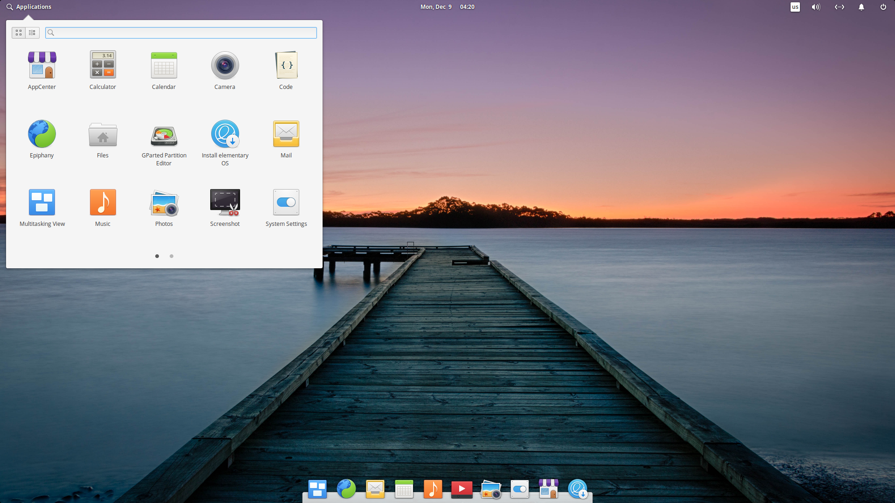
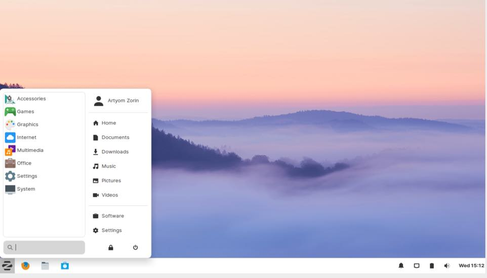
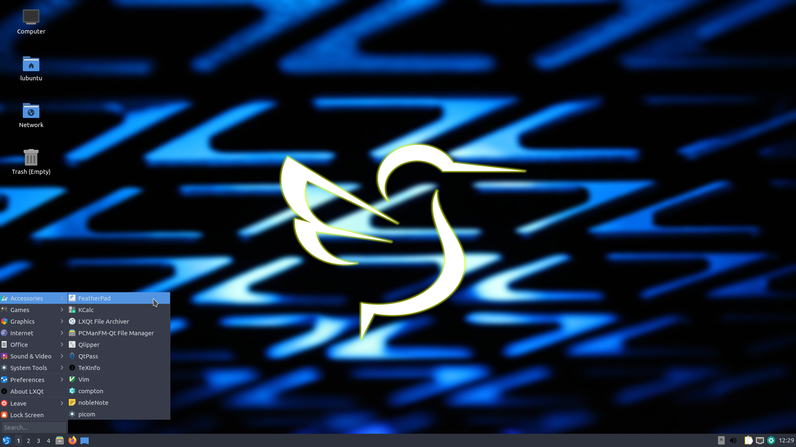
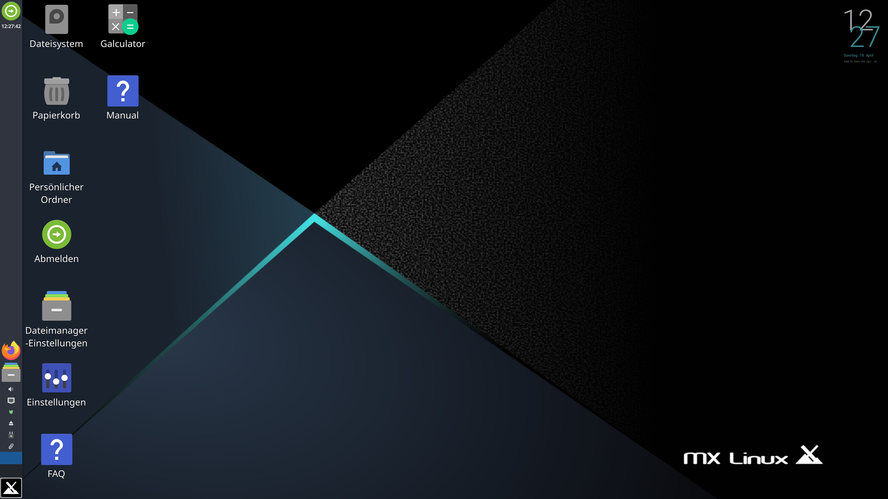

Mundo Linux
Curiosidades sobre o mundo do Software Livre Linux. Cada card lhe apresentará novos conceitos do enredo que envolve o Linux, com objetivo de expandir seus horizontes e instigá-lo(a) a aderir alternativas de Software Livre. O conteúdo é totalmente gratuito e livre para compartilhamento e uso. Os comandos Bash aqui utilizados foram baseados em distros '.deb'.
Conteúdo disponível1. Fundamento
Linux não é um Sistema Operacional completo. É um Kernel livre baseado em padrão Unix (Ken Thompson e Dennis Ritchie), Minix, criado/finalizado em 1991 por Linus Torvalds (finladês de 21 anos), desenvolvido em C, sendo considerado, inicialmente, um emulador de terminal, para uso em Unix, o que resultou no Kernel. Inicialmente cogitava-se o nome Freax (Free And X), com alusão ao Unix, sendo o nome "Linux" descartado egocentricamente por Linus. Graças ao dono do servidor descartar o termo "Freax", foi-se então escolhido novamente "Linux". Sua 1ª versão possuia 10.239 linhas de código, sendo em torno de 13% linhas em branco para melhor organização. Sua 1ª distribuição comercial foi a Yggdrasil Linux/GNU/X, lançada em 1992, no formato Live CD. Atualmente, cerca de 1% das linhas do Kernel é desenvolvida por Linus, contendo em torno de 22 milhões de linhas de código, recebendo cerca de 1300 alterações semanais. Além disso, todos os supercomputadores no mundo são Linux, e 70% da web é gerenciada por servidores Unix. Ao contrário dos demais SOs populares, no Linux é possível personalizar a utilização dos componentes de hardware de forma dinâmica, de acordo com as necessidades do utilizador. Dessa forma, encontra-se, nas comunidades de desenvolvedores, a frase: "Linux: Se colocar roda vira carro, se jogá-lo para o alto vira satélite".
- The Linux Kernel Archives: Acesse
2. Tux
O mascote do Linux é o Tux (Torvalds' Unix). Linus havia sido bicado por um pinguim no Zoológico Nacional de Camberra, contraindo uma doença denominada "Penguinitis", o que lhe inspirou para criá-lo, além do seu gosto pelo animal. Suas formas, criadas no GIMP em 1996, referem-se à um pinguim saciado após um banquete, sugerido por Linus, seu criador. Supõe-se que os pinguins aparentam vestir um smoking (tuxedo), outro fato que ocasionou na escolha do nome.
3. Distros
Uma distribuição Linux (distro) é um SO completo criado a partir do Kernel Linux. Há cerca de 600 distros atualmente, sendo a Debian a 'mãe' da maioria. Nem todas são totalmente gratuitas, como o Red Hat Enterprise Linux (RHEL). Distros como Mint, Ubuntu e KDE são baseadas (criadas) a partir da Debian. A versão não modificada do Kernel Linux é chamada de 'Vanilla'. A 1ª distro foi a Yggdrasil Linux/GNU/X. A distro comunitária mais antiga é a Slackware, ainda ativa. Cada distro possui nomenclatura baseada em alguma referência cômica ou algo do tipo, como a Mint, que suas versões estáveis possuem nome feminino, e as instáveis, masculino (por que supõe-se que, nas decisões da vida, as mulheres são mais estáveis do que os homens). A distro Debian possui nome como referência à esposa do criador, 'Debie', e seu nome 'Ian', onde cada versão possui como nomenclatura um personagem do filme 'Toy Story'. Há uma teoria de que o logo da Debian, o redemoinho Magic Smoke, foi criado porque o personagem 'Buzz Lightyear' possui um redemoinho similar no queixo. As principais distros Linux são Mint, Ubuntu (mais usada), Fedora (Red Hat), RHEL (Red Hat Enterprise Linux), openSUSE, CentOS (Community Enterprise Operating System, Red Hat), Zorin OS, KDE Neon, Kali, Tor, Tails, MX Linux, Deepin, SteamOS, AV Linux (Kernel Linux RT - Real Time), Ubunu Studio, Kurumin, Arch, Manjaro (Arch), Elementary OS, Raspbian, Oracle Linux (Red Hat), CBL-Mariner (Commom Base Linux, .rpm, Microsoft), Pop!_OS, Tiny Core, Endless OS, entre outras. O site DistroWatch possui o ranking das distros mais usadas e todas as novidades no mundo das distros Linux. Toda distro possui determinadas versões, sendo a Stable (LTS - Long Term Support) a versão mais estável atualmente publicada, geralmente com menos frequência de atualizações, onde a mesma nem sempre é a mais nova lançada. Esta versão é menos propensa a bugs. Há também versão Testing (Rolling Release), sendo a mais moderna publicada, onde há maior frequência de atualizações e novidades em recursos/pacotes. Existe também a versão Unstable, versão mais nova, ainda não publicada, estando em fase de desenvolvimento, sendo mais propensa a bugs e falta de features. Versão muito utilizada pela comunidade, a fins de testes, para propor soluções de bugs e possíveis melhorias.
4. Linus Torvalds
Linus Benedict Torvalds, Helsínquia, 28.12.69, Eng. Soft., é o criador do Kernel Linux, Git e outros softwares populares. Seu interesse em computadores iniciou-se com a criação do clone do Pac-Man, Cool Man. Linus usa sua data de nascimento (em hexadecimal) como aceitáveis nºs mágicos no reboot do Kernel. Em 1991, assistindo conferência ativista de software livre de Richard Stallman, conhece o projeto GNU, após criando o Kernel Linux em um hobby comum, licenciando-o ao projeto. Mais tarde a Apple tentou contratar Linus, com a condição de encerrar o projeto do Kernel, porém houve rejeição de Torvalds. O 1º Kernel lançado possuía 65KB, baseado no Minix. Linus tem como diretriz a frase "código aberto é o único jeito certo de se fazer software". A imagem acima refere-se a uma crítica feita por Linus à Nvidia com relação à qualidade e compatibilidade de seus produtos. Atualmente Linus gerencia o projeto Linux, com pouca participação no código do projeto.
5. Utilização
O Linux é o SO mais utilizado em aplicações embarcadas, sendo muito utilizado em IoT, por possuir grande compatibilidade e nenhum custo. 90% da web é gerenciada por servidores Linux. 99% dos supercomputadores no mundo são cluster Linux. Linux ocupa 2% dos desktops no mundo. Playstation 2 e 3 são Linux. Playstation 4, Windows e Mac OS são sistemas BSD, um SO padrão Unix. A licença BSD é livre, porém essas empresas montam um sistema acima deste Kernel, que é proprietário. Smart Tvs modernas, com Android TV e WebOS são Linux, assim como o SO Android, presente na maioria dos smartphones do mundo. Grandes montadoras de automóveis desenvolvem central multimídia Android, com conexão Android Auto. Na Suíça todas as escolas usam Linux. Nas prefeituras de Barcelona, Munich, possuem também o SO. As Forças Armadas usam Linux, por ser aberto, como nos submarinos dos EUA, seus departamentos de defesa e força aérea. Empresas como IBM, Google, Microsoft, Intel, Samsung, Facebook, Twitter, LinkedIn, AMD, Shell, Petrobras (com supercomputador), Oracle, Boeing, Motorola, Sony, Cisco, Novell, Hp, Nasa, SpaceX, entre muitas outras, também o utilizam. 90% das animações em Hollywood, como na Pixar, são produzidas com Linux, como nos filmes Avatar, Interstellar, Gravity, Shrek e Titanic. O Grande Colisor de Hádrons é controlado por Linux. Os rovers que exploram a superfície de Marte são controlados por Linux. A Microsoft publicou seu amor pelo Linux, ao vinculá-lo à seus projetos e estruturas internas, inclusive o Windows 10, com o SO livre como base de suas criações. Intel, Red Hat, Linaro e IBM são as principais contribuidoras do Kernel Linux. 90% das nuvens públicas são gerenciadas por Linux. Países como Brasil, Cuba (Nova OS), Coreia do Norte (Red Star OS), Rússia e Venezuela têm cada vez mais foco no uso do Linux e softwares Livre. Outro uso crucial do Linux é em aplicações críticas, como os trens bala no Japão, CERN, sistemas de controle aéreo, reatores nucleares e artilharia de guerra.
6. Vantagens
Vantagens de distros Linux são resumidas em 4 conceitos: versatilidade, leveza, simplicidade e beleza. Linux, por ser um Kernel mais propenso ao meio do desenvolvimento, não tem a necessidade de antivírus. Atualização de programas e limpeza são feitas de forma automatizada, com apenas 1 comando no terminal, dispensando programas terceiros. Linux é aberto, possuindo comunidades de desenvolvedores prontos para lhe auxiliar com dúvidas a todo momento. Distros Linux são altamente bonitas, acessíveis e personalizáveis, onde pode-se modificar praticamente tudo (Software e Hardware), à seu gosto. Pode-se utilizar muitos softwares próprios de Mac e Windows utilizando ferramentas como Wine, para permitir maior compatibilidade com o SO. Linux revive computadores antigos devido sua leveza, ao rodar, em muitas distros completas, com aproximadamente 300MB (Os resultados são incríveis). Por fim, Linux é Livre, sendo assim gratuito e aberto para que você possa fazer o que quiser com ele!
7. Desktop Environment

Distros Linux são construídas com gerenciadores de janelas previamente já desenvolvidos. Em muitas situações, o usuário pode escolher qual ambiente gráfico sua distro possuirá. Por exemplo, em uma distro com 3 usuários diferentes, cada um pode optar por utilizar um gerenciador de janelas diferente. Os gerenciadores de janelas são diferentes entre si no que diz respeito de recursos de uso no dispositivo, customização e aparência, configuração de menus, Interface Gráfica (GUI) e capacidade de uso em vários dispositivos ao mesmo tempo. Os principais quesitos para a escolha são visual e desempenho. Os termos Desktop Environment e Interface Gráfica não são a mesma coisa: o 1º engloba a interface em conjunto com os aplicativos da Distro. Uma Distro pode usar interface gráfica X, e aplicativos 'tema' de uma interface gráfica Y. Entre principais encontram-se Gnome (GNU Network Object Model Environment, foto acima), que utiliza o widget toolkit GTK e servidor gráfico XORG (Alternativo do Wayland), KDE (K Desktop Environment), que utiliza o widget toolkit Qt, AwesomeWM, WindowMaker, Cinnamon, Pantheon, Deepin Desktop Environment, Fluxbox, Unity (7 é desktop, 8 é também mobile), MATE (MATE Advanced Traditional Environment. 'Mate' de Erva-Mate), LXDE (Lightweight X11 Desktop Environment), LXQT (LXDE + Qt Python) e XFCE (XForms Common Environment), entre outras, sendo essas últimas duas para hardware mais fraco. Esses ambientes são altamente personalizáveis, onde pode-se personalizar tudo, com temas à instalar, ou até mesmo trocar pontos chave, como ícones, texto e cores. Muitas distros oferecem, no momento da instalação à máquina, opções de Desktop Environment ao usuário, como o Kali Linux (oferece opção entre Gnome, KDE e XFCE).
"Sempre existirá uma distro Linux à sua cara. Se não houver, você poderá montá-la."8. Distros Iniciantes
Mint

O Linux Mint é a melhor distro para iniciantes, por razão da semelhança visual com o Windows. Outro ponto é a facilidade para instalações, atualizações e correções de erros de forma visual, fazendo com que o contato com o terminal seja raro. Possui também a maior comunidade, muitos fóruns de ajuda, é uma distro muito estável e mantem-se sempre atualizada. Recomenda-se, para usuários familiarizados com Windows, Desktop Environments como Cinnamon e XFCE.
- Site oficial Mint: Acesse
Elementary OS
Possui visual muito similar ao MacOS, além de ser simples, leve e, além disso, muito elegante. Alternativa à essa, recomenda-se o Deepin. Tem-se outras distros, mais 'alusivas', portanto, menos funcionais, como pearOS e CutefishOS. Recomenda-se, para usuários familiarizados com MacOS, Desktop Environments como Pantheon e Deepin DE.
- Site oficial Elementary OS: Acesse
Ubuntu

O Ubuntu possui as mesmas vantagens acima, do Mint, com excessão do Desktop Environment, que é diferenciado do Windows, o que torna sua familiaridade um pouco mais distante. Todavia, é muito estável, popular, seguro e automatizado. Esse último ponto é um pouco inferior que o do Mint, o que torna o Ubuntu como segunda alternativa, além do fato de que é uma distro um pouco mais pesada. Todavia, o Ubuntu Server domina o mundo dos servidores web. Recomenda-se, para usuários entusiastas, Desktop Environments como Gnome e KDE.
- Site oficial Ubuntu: Acesse
9. Distros Leves
Zorin OS Lite
Distro focada à usuários domésticos. Bonita, moderna, estável e completa. Simplesmente sensacional, roda com aproximadamente 300MB, revivendo seu computador velho com beleza, desempenho e tudo mais o que precisar. Perfeita para o aprendizado à usuários de primeiros contatos com a computação. Recomenda-se Desktop Environment XFCE.
- Site oficial Zorin OS: Acesse
Lubuntu
Baseada, porém totalmente diferente do Ubuntu, essa distro completa, simples e com alto desempenho, roda com aproximadamente 500MB. É um pouco mais manual do que o Zorin, sendo ideal para usuários intermediários que têm preferência em usar um Desktop somente com o essencial e personalizável. Recomenda-se Desktop Environment LXDE ou LXQt.
- Site oficial Lubuntu: Acesse
MX Linux
Baseada em Debian, possui como objetivos alta estabilidade e desempenho. Transmite leveza e pouca necessidade de hardware. É apresentada em vários formatos gráficos, à escolha do usuário ao instalá-la, sendo XFCE (Padrão), KDE ou Fluxbox. Recomenda-se Desktop Environment Fluxbox.
- Site oficial MX Linux: Acesse
10. Servidores
Linux é o SO mais vasto na linhagem de servidores. Toda empresa precisa de um servidor para gerenciar seus dados. Da mesma forma, toda empresa procura seriedade, ou seja, qualidade e integridade em sua infraestrutura. Versões estáveis (LTS) de um servidor Linux tendem a possuir somente recursos fundamentais, que não se tornam obsoletos da noite para o dia. Da mesma forma, não possuem atualizações frequentes em novidades de pacotes. Portanto, quando as mesmas recebem atualizações de pacotes, esses já possuem determinado tempo de utilização e circulação, onde já foram testados e aprimorados e, portanto, não são mais novidades no mercado, havendo assim melhor compatibilidade para funcionamento, segurança e otimização. As raras atualizações nesses SOs têm objetivo de não afetar a integridade do sistema e seus respectivos pacotes instalados e em funcionamento, como a solução implantada pelo cliente no mesmo. Por exemplo, uma empresa global de tráfego aéreo precisa de um SO servidor, para hospedar seu sistema de tráfego aéreo, que não pare de funcionar por razão de incompatibilidade ao realizar atualização de pacotes. Da mesma forma, deve-se haver nesse SO o mínimo de atualizações possíveis, para não afetar o desempenho e integridade do SO, que suporta o sistema de tráfego aéreo, funcionando em tempo real. As raras atualizações nele ocorrerão somente quando essenciais para seu funcionamento, segurança e, portanto, integridade, ou seja, para manter o sistema do cliente suportado, sem que o mesmo pare de funcionar, ou torne-se lento/inseguro... Outro ponto é que este SO precisa servir somente como base, possuindo abstração em recursos (Menos pacotes, menos chances de bugs e falhas de segurança), onde há somente o fundamental, para que não haja recursos sem utilidade nele instalados. Sendo base, o mesmo poderá ser personalizado pelo cliente, de acordo com suas necessidades. Por fim, o objetivo de um servidor é manter-se em funcionamento, com desempenho e segurança, além de íntegro, causando o mínimo possível de "ruído" ao cliente, estando totalmente à disposição do mesmo, para personalização e funcionamento. Como principais exemplos de distros Linux para servidores, tem-se a Debian, Ubuntu Server LTS e RHEL. O CentOS é a versão grátis do RHEL, porém o mesmo fora descontinuado, dando espaço para o Fedora Server. Geralmente o acesso e gerenciamento a esses servidores é CLI, via Bash, sendo raras versões modernas com gerenciamento via cPanel. Além disso, pode-se utilizar o Proxmox, que trabalha diretamente com VMs e Containers Linux LXC, ou até mesmo FreeNAS, SO inspirado em FreeBSD, para criação de servidores de armazenamento (NAS Server - Network-Attached Storage)
11. Estrutura

Derivado do Unix, no Linux não existem, de fato, programas/drivers/extensões: Tudo é considerado arquivo. Diretório/pasta são arquivos que contém arquivos. Por exemplo, todo movimento do mouse é baseado na incrementação de conteúdo no arquivo correspondente, fazendo com que o cursor mova-se de acordo com este conteúdo. No Linux não existe extensão de arquivos, já que não existem programas. A extensão, no contexto Linux, é a expressão definida dos nomes de arquivos. Todo arquivo possui caminho de passagem, por meio de seus antecessores e sucessores. Caminho Absoluto origina-se a partir do diretório root/raíz (/), até seu diretório atual (Ex arquivo sysadmin: /home/Documents/Admin/sysadmin). Caminho Relativo origina-se a partir de um diretório qualquer como a localização atual (Ex arquivo sysadmin: Admin/sysadmin). O caractere . (ponto) representa o diretório atual. O caractere ~ representa o diretório home. O diretório root/raíz (/) é o primeiro de todos diretórios, ou seja, onde estão todos os diretórios e arquivos do Linux para acesso, sendo somente acessado pelo usuário root (#). Todo arquivo oculto inicia-se com um ponto na frente. Linux dispensa uso de ambiente gráfico para ser operado, pois todo o sistema é dividido em camadas (layers): Possui Kernel como centro do sistema, que comunica-se com o hardware, fazendo a interface de gerenciamento de usuários, aplicações e processos/execuções. Algumas distros Linux funcionam no formato Dual Kernel, no qual o usuário pode escolher qual versão do kernel deseja iniciar em sua distro.
Caminhos de diretórios:
- (/) Diretório Raíz/Root (cd /)
- (.) Diretório Corrente (cd .)
- (..) Diretório Pai (cd ..)
- (-) Diretório Anterior (cd -)
Funcionamento da máquina:
- Aperta botão power
- Aciona BIOS/MBR
- Gerenciador de Boot (Grub2)
- Usuário escolhe o Kernel
- Kernel chamará processo init, que carregará os serviços
- Gerenciador de login, que dará acesso direto ao interpretador de comandos
- Desktop Environment
Camadas distro Linux:
- Hardware: Ambientação física da máquina
- Kernel Linux: Núcleo mediador entre hardware e camadas superiores
- Sistema Operacional: Camada que auxilia e hospeda todos os programas das camadas superiores
- Teletypes (tty1, tty2, tty3, tty4, tty5, tty6): Terminais virtuais, responsável por interpretar/converter os comandos (programas) introduzidos pelo usuário à máquina. Por padrão, tem-se 6 ttys, mas ao todo tem-se 63 (ls /dev tty*)
- DM (Display Manager): Gerenciamento de logins, selecionando tipo de ambiente gráfico
- Ambiente de Trabalho (Desktop Environment): Ambiente de hospedagem dos programas, cujo funcionamento depende do uso de Interface Gráfica (GUI)
Estrutura de arquivos:
Em 1994, a FSSTND (Filesystem Standard) criou a estrutura básica de organização de arquivos no Linux. Atualmente, algumas distros trazem ZFS como integração, mais voltado para distros profissionais. Linux compõe-se da seguinte estrutura de arquivos, baseada na FHS (Filesystem Hierarchy Standard), mantida pela FSG (Free Standard Group), no padrão Posix:
/ (raíz):
Dentro do diretório raíz (/) encontram-se todos os demais diretórios.
/bin:
Todos os comandos (Binaries) alias acessíveis ao usuário, sendo a pasta um link simbólico para /usr/bin, executáveis no Bash, são referenciados neste diretório. Por exemplo, o comando alias ls refere-se ao /bin/ls. Neste caso, ls /boot/grub é o mesmo que /bin/ls /boot/grub.
/boot:
Onde ficam os arquivos estáticos necessários para a inicialização do sistema, como o gerenciador de boot (grub) e imagem do Kernel.
/dev:
Onde ficam todos os dispositivos (Devices), como periféricos, onde a comunicação ocorre por meio de links. Por exemplo, o dispositivo controlador do mouse na movimentação do cursor na tela. Neste diretório encontram-se o hd (sda ou vda), periféricos (Usb geralmente é sdb, sdb1...), ttys, entre outros. Ao acessar o arquivo de escrita em disco, pode-se utilizar o ctrl+h para resetar e sair do mesmo.
/etc:
Onde ficam todos os arquivos de configuração do sistema, como scripts de inicialização, scripts especiais de módulos de programas, tabela de sistema de arquivos, configuração de serviços, configuração de usuários. Arquivos de configuração de disco, como /etc/fstab (Filesystem Table), arquivos de usuário como o /etc/passwd, que possui todas as informações dos usuários, cujas informações, separadas por ':', constitui, respectivamente, login do usuário, senha (Geralmente x, que determina que a senha está em /etc/shadow, ou *, determinando que o login está desabilitado, se linha em branco, determinando que a conta não possuirá senha), UID (User Identification), GID (Group Identification), GComs (Comentários do usuário, separados por vírgulas, como nome, id, telefone, endereço), localização home do usuário (Como /home/nomeUsuario) e, por fim, shell do usuário (Como /bin/bash ou /usr/sbin/nologin). No arquivo /etc/shadow encontram-se os seguintes campos para cada usuário: login do usuário, senha criptografada, data em nº de dias, desde 1970 até atual, com relação à última modificação de senha, nº de dias antes do sistema permitir nova modificação de senha, nº de dias que usuário pode permanecer com a mesma senha, nº de dias antes da expiração de senha, nº de dias após expiração de senha, nº de dias, de 1970 até expiração da senha e, por fim, reservado para campo futuro (Esses últimos 3 campos geralmente encontram-se em branco). Neste contexto, o comando pwconv é usado para criar o arquivo /etc/shadow a partir do /etc/passwd. O comando pwunconv realiza a operação inversa. O comando getent passwd é mais recomendado para abrir o passwd, do que acessar diretamente o arquivo em si.
/home (~):
Onde estão os arquivos dos usuários. O '~' representa o diretório de usuário, contido dentro do diretório home. Portanto, contém arquivos pessoais dos usuários no sistema. Caso o sistema tenha 10 usuários, terão-se 10 diretórios dentro de /home, cada uma com os arquivos pessoais de cada respectivo usuário.
/lib, /lib32, /libx32 e /lib64:
Onde ficam todas as bibliotecas compartilhadas, módulos do kernel. Bibliotecas (Libraries) são funções que podem ser utilizadas por programas (como se fossem dll's). Cada kernel possui suas respectivas libraries (também chamados de módulos). Para conferir todos os módulos do kernel, tem-se o comando ls /lib/modules/$(uname -r)/kernel.
/lost+found:
Diretório, geralmente oculto, de 'achados e perdidos', usado para reparos no sistema, com fragmentos do mesmo.
/media:
Serve de ponto de montagem para mídias removíveis, como cdrom, floppy, câmeras, hd externos, pendrives, entre outros.
/mnt:
Usado para montagem temporária de sistemas de arquivos, como Windows, outros GNU/Linux, montados manualmente pelo usuário através do arquivo fstab em /etc/fstab. Este diretório geralmente encontra-se vazio, caso a máquina não possua tais operações no momento.
/opt:
Geralmente utilizado por programas adicionais/proprietários, até mesmo não licenciados pela GNU, não essenciais para o sistema.
/proc:
Diretório virtual, volátil, onde tem-se todas as informações da máquina, como cpuinfo, lscpu, meminfo, version, partitions, entre outros. Tem-se também os processos em execução, representados, em diretórios, por seus respectivos PID, ou seja, em números identificadores.
/sbin:
Onde ficam todos os super binários (Super Binaries), comandos utilizados e somente acessados pelos administradores do sistema (root), essenciais ao mesmo. Comandos de inicialização (boot), reparação, restauração, recuperação, verificação de informações preciosas (Rede).
/srv:
Usado para gerenciar dados de serviços (Services), fornecidos pelo sistema, como serviços de rede. Geralmente administradores utilizam tal diretório para instalação de servidores, como servidor web (Ex: /srv/www), servidores ftp (Ex: /srv/ftp), entre outros serviços, que ficarão acessíveis externamente.
/tmp:
Onde ficam os arquivos temporários, pois é um diretório virtual, volátil assim que o sistema é reiniciado. Geralmente utilizado a fins didáticos, para não criar 'lixo' no interior do sistema. Diretório com pequenos arquivos, como informações de downloads, entre outros arquivos temporários.
/usr:
Subdiretório (User ou Unix System Resources), onde tem-se, em seu interior, diretórios como /bin, /lib, /sbin, /share, /src, entre outros diretórios, que são pertencentes ao /usr. Dessa forma, possui programas que não são essenciais ao sistema, mas que seguem o padrão GNU, como por exemplo browsers, desktop environment, código fonte do kernel (/src).
/var:
Diretório de informações variáveis e arquivos de tamanho variável, onde tem-se cache, logs, arquivos de impressão (/spool), entre outros. O CUPS (Commom Unix Printing System) é o servidor de impressão BSD para Linux e MacOS, funcionando com servidor-cliente, para multiplas conexões ou até mesmo local, identificando as impressoras de forma direta.
/sys:
Mesmo que /proc, mas dispõe de categorias, sendo assim mais organizado. Dessa forma, mapeia chamadas diretas com o kernel, sendo diretório virtual (volátil)
/root:
Contém arquivos pessoais do usuário administrador root, onde pode-se manipular interface de rede, usuários e grupos, alterar prioridades, entre outras funções avançadas fundamentais ao sistema.
/run:
Onde estão arquivos temporários dos programas, que não podem ser apagados ao longo do funcionamento da máquina, ao contrário do /tmp, além de informações de serviços em execução. Diretório virtual.
12. Licenças
IEEE, o comitê POSIX, determinou um conjunto de regras para sistemas padrão Unix. Windows e MacOS seguem tais regras para uso dos SOs, já que possuem Unix em seu Kernel, com algumas modificações proprietárias de mais alto nível. Richard Stallman, com a desaprovação da liberação de código fonte das impressoras Xerox, criou o Manifesto GNU (GNU Not Unix), interessado em produzir um SO padrão Unix livre, que estava sendo pago na época. Um SO, como uma cebola, é composto por 3 camadas: Kernel (núcleo), Bibliotecas de acesso ao Kernel (libraries, possibilitam chamadas de sistema - comunicação das aplicações com kernel) e Utilitários. Stallman com parceiros desenvolveram as bibliotecas e utilitários. Posteriormente, Stallman saiu do MIT e criou a Free Software Foundation (FSF), organização sem fins lucrativos, ao qual o projeto GNU faz parte, com principal foco em manter a GPL. O Kernel, Hurd, foi dado procedência com Linus, baseado no Minix do Tanenbaum, pra produzir algo totalmente livre. A biografia de Linus tem como título 'Just for Fun' para esboçar a liberdade do SO. O Linux é, na verdade, composto por camadas do projeto GNU, o que o torna GNU Linux. Todo software possui a EULA (End-User License Agreement), dos quais citam os termos do produto, que, no caso, limita a redistribuição e modificações no sistema, além de punições. O Windows utiliza tal meio de licença. O licenciamento cede ou limita o direito ao uso de determinado programa ao consumidor final. MacOS é gratuito, porém é só permitido usá-lo em máquina Apple. A licença GPL (GNU General Public License), 'Free as Freedom', criada pelo Stallman, permite o uso do Software Livre, com responsabilidades de uso ao usuário final. Existem mais de 70 licenças de software de código aberto, presentes no site Open Source Org. O site GNU Project possui a lista completa de licenças de Software Livre. A GPL, com 3 versões, garante 4 liberdades:
- Executar o software para qualquer propósito ou finalidade;
- Estudar o funcionamento do software, podendo fazer alterações e adaptá-las conforme necessidade. Para isso, precisa-se do acesso total ao código fonte do mesmo;
- Modificar e melhorar o software, para que a comunidade possa beneficiar-se das mesmas;
- Distribuir o software e cópias, contanto que a distribuição seja com as mesmas liberdades que o software recebido, como não fechar o código.
A ideia principal da GPL é prorrogar, ao máximo possível, a liberdade do software, de forma que o usuário jamais poderá se apoderar do mesmo e torná-lo algo proprietário. A licença BSD exige somente o cabeçalho personalizado, dos quais o Windows e MacOS usam, por razões dos núcleos de seus SOs serem BSD. Licença Open Source permite ver o código fonte do produto. Software Livre é aquele em que pode-se fazer o que quiser com o software. Por ser livre, também é Open Source e geralmente é gratuito. Mas software Open Source pode não ser livre, por razões de comercialização. Assim como software gratuito não é Open Source, nem Livre, como o Whatsapp. Nem todo Linux é Livre ou gratuito, como o Red Hat Enterprise Linux, do qual você paga pelo suporte. As ferramentas e utilitários do Linux podem ser pagas e proprietárias, o SO é independente dos demais. Customização, suporte, treinamento e serviços terceiros sob ferramentas Livre podem ser cobradas.
Free as in 'Free Speech' not as 'Free Beer' (Livre como Liberdade de expressão, não como cerveja grátis).13. Origens
As 3 distros base (From Scratch) principais são Slackware, Debian e Red Hat. Gentoo, SUSE e Arch saem também direto do Linux Scratch (Raíz). O nome Debian origina-se de Debra (Esposa do criador) + Ian (Ian Murdock, criador), onde todas as versões possuem nomes de personagens do Toy Story, foi o progenitor de muitas distros, as populares .deb. Seu logo referencia a fumaça espiral saindo de uma lâmpada mágica. Debian é muito popular por sua grande estabilidade com seus pacotes. A Red Hat, vinculada à IBM, é inspiradora de distros .rpm, como a Fedora, versão free da distro oficial Red Hat Enterprise Linux (RHEL). A Ubuntu é baseada na Debian, todas as versões compõem-se de um adjetivo e nome de animal. Ubuntu é um termo africano zulu que significa 'comunidade através dos outros', conceituando 'eu sou o que sou porque nós somos', em homenagem ao seu criador Sul Africano, em parceria com a Canonical. Seu símbolo conceitua 3 pessoas dando-se as mãos, formando um círculo. Seu slogan é 'Linux for Humans Beings' (Linux para seres humanos). Distros Linux como Mint foram inspiradas no Ubuntu. O Red Hat Enterprise Linux, da empresa Red Hat, tem como logo o chapéu Fedora vermelho, cuja distro Fedora é sua versão free distribuída e auxiliada pela comunidade, já que o RHEL possui pagamentos relacionados com suporte, muito desejado nas grandes empresas que buscam seriedade e profissionalismo na administração de sistemas. A Slackware foi a 1ª distro Linux, o que faz dela a distro mais antiga mantida, sendo bastante usada até atualmente. É baseada na estabilidade e simplicidade. O nome deriva-se do termo "Slack", significando "Senso de liberdade, independência e originalidade para alcançar suas metas pessoais". Por outro lado, o termo "Slack" deriva-se de "Preguiça", e "Ware" de "Produto", sendo interpretado como um produto de lapidação lenta. Atualmente, existem distros Linux minúsculas, focadas para determinados serviços, como execução em Containers e funcionamento em sistemas embarcados. SUSE deriva-se de Software und System-Entwicklung (Software e Desenvolvimento de Sistemas), possui como mascote o Camaleão Geeko (Gecko - Lagarto + Geek). É conhecida pelo instalador YaST. Possui, além disso, a versão do SO paga, o SUSE Linux Enterprise versão paga do openSUSE, pertencente à empresa Micro Focus Internacional. O Arch Linux é inspirado no antigo CRUX, possui distro rolling release, contendo o gerenciador de pacotes Pacman (AUR - Arch User Repository, mantido pela comunidade). É baseada em 5 pontos: simplicidade, modernidade, pragmatismo, centralidade no usuário e versatilidade.
14. Avançado
A Distro considerada por muitos a mais 'difícil', essa é a Gentoo Linux. Com vantagens e desvantagens, sua dificuldade de uso explica-se por razão de ser de baixo nível, sendo praticamente toda manual e personalizável, a fim de que o desenvolvedor crie aplicações extremamente personalizadas para o ambiente, desfrutando de estabilidade e desempenho. Com ela, o usuário desfrutará de todo o poder de montagem do Kernel, personalizando-o para seu hardware. O objetivo da distro era a criação de um SO sem binários pré-compilados, com a minimalidade ao extremo. O nome é baseado no pinguim Gentoo, conhecido por ser muito veloz ao nadar. O Gentoo pode ser descrito como uma meta-distribuição, devido à suas características. Existem distros baseadas no Gentoo, como Sabayon e Redcore. O Gentoo, após instalado, é considerado um sistema sem versionamento, indicando que a versão instalada é sempre a final utilizada no hardware. Seu logo é um 'G' lembrando um Magatama ('Jóia curva' de miçangas japonesas). Seu mascote oficial é o Knurt, o pires voador. Mascote não oficial inclui Larry, o vaca. A instalação da distro é manual, porém fora desenvolvido um instalador CLI para facilitar os usuários, aumentando assim a produtividade.
- Site oficial Gentoo: Acesse
15. Migração
Ao realizar o processo de migração a uma distro Linux, tem-se algumas formas. Primeiramente, pode-se instalar a distro Linux na máquina (Bare Metal), via pendrive bootável (Live Boot), substituindo o SO atual. Para isso, é necessário um pendrive de no mínimo 4GB, dependendo do tamanho de seu arquivo .iso. Vale lembrar que, dependendo da máquina, será necessária a instalação de uma distro do tipo non-free, como geralmente na instalação da Debian, que possua todas as dependências de conexão com hardware pré-instaladas localmente (Verifique com relação à distro e seu equipamento). O pendrive será formatado durante o processo, portanto todos os arquivos presentes nele serão perdidos. Nesse caso, exemplificando com Windows, instala-se o arquivo .iso da distro, após o software criador de pendrive bootável Balena Etcher. Após download dos softwares, pluga-se o pendrive e executa-se o Balena Etcher, informando pendrive e .iso. Após pendrive formatado, o computador deverá ser reiniciado, acessando a lista de Boot do sistema (F12), antes mesmo do boot com o SO atual. Nesta tela, seleciona-se o modo de Boot com pendrive, que inicializará a distro Linux, com o programa de instalação. Realizando o passo a passo da instalação (Anaconda (Sabayon), DI (Debian-Installer), Drakx Installer (Mandriva/Mageia), Sysinstaller, Ubiquity (Ubuntu16), Calamares (Red Hat), YaST (SUSE)...), no particionamento de disco, poderá optar entre instalar a distro Linux 100% no dispositivo, removendo assim o SO atual e seus arquivos internos, ou instalar a distro Linux ao lado do SO atual (Dual Boot, sujeito à particionamento de disco prévio - para Linux tem-se GParted (GNU Parted GUI), GNOME Disks Utility, KDE Partition Manager, QtParted, FDisk (CLI)). No caso da 2ª opção, será instalado o gerenciador de inicialização Grub, onde será necessário, posteriormente à finalização da instalação da distro Linux, alterar, após reinicialização da máquina, antes mesmo do Boot com SO padrão, acessar na BIOS (F2), o ordenamento de Boot, movendo para 1º a inicialização com Grub e para 2º a inicialização que estava no topo, caso contrário iniciará o SO que já estava instalado na máquina selecionado para Boot. Após esse processo, pode-se remover o pendrive com segurança, não sendo o mesmo mais necessário para inicialização da distro Linux. Outro processo de instalação de distro Linux é através da criação e execução de Máquinas Virtuais (Hypervisors como VM- Virtualbox, VMware Workstation) com a distro Linux como SO. Assim, até mesmo nativamente com Windows Hyper-V (Se o Windows 10 possuir recurso de acesso Gerenciador do Hyper-V). Com relação à virtualização, existem softwares hypervisors tipo 1 (Bare Metal), que possuem arquitetura com 1 camada a menos, onde o software hypervisor ocupa o lugar do SO, criando servidor de virtualização diretamente acima do hardware. Exemplo Microsoft Hyper-V, VMware ESXI, Xen e KVM (Kernel-based Virtual Machine), sendo os últimos 2 baseados Linux. Inclusive o KVM pode ser usado como tecnologia para Hypervisors tipo 2. Há também hypervisors tipo 2, softwares terceiros, como Virtualbox, VMware Workstation, QEMU, Gnome Boxes, etc. Além disso, pode-se utilizar distro Linux diretamente via Prompt Windows 10, ativando os recursos WSL2 (Windows Subsystem for Linux). Pode-se também testar distro Linux, via terminal, através do projeto Katacoda (Cloud), de forma online, que proporciona máquinas em Containers, ou até mesmo diretamente na máquina via Containers, como Docker.
Tipos de iso/instalação:
- USB: Geralmente associada à pendrive bootável, para instalação/teste no dispositivo;
- CD: Geralmente mais leve, possui menos recursos, geralmente necessita de internet para instalação de demais programas, ou descartando, dependendo do tamanho do CD. Geralmente instalação mais direta que USB;
- DVD: Geralmente mais pesada, possui todos os recursos (programas) para instalação, geralmente descartando internet. Mais pesada que o comum;
- Live: Geralmente associada à Live USB, para utilizar a distro sem necessidade de instalação. Leve;
- NetInstall: Geralmente associada, ou à USB ou à pequeno CD, para instalação totalmente dependente de internet. Extremamente leve;
- non-free: Imagem completa, contendo, inclusive, toda gama de conectores de hardware de todos fabricantes. Geralmente a mais pesada;
- Netboot: Forma de instalação. Geralmente associada à instalação direta, via rede TFTP, DHCP/BOOTP/RARP, utilizando PXE e TFTP;
- Torrent / Container / ARM / Cloud / VM / Mobile / Build Scripts: Outras formas de instalação, sendo build scripts os códigos em arquivos diretos.
Particionamento de disco:
Levando em consideração espaço em disco único de 500GB, independente dessa quantidade ser o disco inteiro vazio, ou um espaço sem alocação, ao lado de outras partições de SO (Dual Boot) e 4GB de RAM. Levando em consideração, de forma genérica (tudo dependerá do poder da máquina, com relação à RAM e espaço em disco, e 'peso' da distro, ou seja, os valores mínimos que ela necessita para funcionar), o particionamento do espaço em disco em questão, para instalação do Pop!_OS 20.04, do tipo GPT (GUID Partition Table), se fará da seguinte forma:
- Boot: Partição para boot da distro, do tipo primária FAT32, com label /boot/efi, com média de 600MB;
- Swap: Partição de memória virtual, do tipo primária linux-swap, sem label, com média de metade do tamanho da RAM (Aqui no caso 2GB);
- Root: Partição raíz, onde ficará o sistema, do tipo primária journaling EXT4, com label /, preenchendo com o restante do espaço livre.
- Opcional (Partição home separada): Partição onde ficarão os arquivos dos usuários (documentos, imagens, vídeos, etc), do tipo primária journaling EXT4, com label /home, preenchendo com o espaço livre restante (Neste caso, 40% do espaço livre restante será de home, e os demais 60% será de root).
Tutoriais de instalação:
16. Ambiente
Conceitos gerais sobre Linux, ambiente Mint LMDE4, Codecs (Compatibilizadores de formatos de mídia), Snapshot (Timeshift - Gerenciador de Backups), Cron / Crontab (Agendador de tarefas, como emails), firewall GUI, gerenciamento de módulos ("Drivers"), Grub (Gestor de Boot, como em dual boot), chaves de autenticação (Para instalação de pacotes), gestão de pacotes e instalações básicas. Para melhor entendimento, visualize o vídeo explicativo abaixo.
- Vídeo conhecendo Mint LMDE4: Acesse
17. Dispositivos
O Linux tem suporte a vários sistemas de arquivos, inclusive os que o Windows suporta, como FAT32, exFAT, NTFS e EXT4. Há outros, como EXT3, EXT2, reiserfs, swap, xiafs, minix, msdos, vfat, proc, smbfs, iso9660, ufs, hpfs, entre outros. SOs como MacOS não suportam gravação NTFS, suportando apenas leitura. Linux era similar no passado, atualmente consegue. O FAT32 não possibilita manipular arquivos com mais de 4GB. exFAT é compatível com arquivos maiores que 4GB, mas não tão compatível quanto FAT32. NTFS (New Technology FIle System) é compatível com Windows, apesar de problemas ocasionais com Linux serem ainda frequentes, pois a compatibilidade com o Linux está sendo feita por meio de Engenharia Reversa, sendo ainda não compatível com MacOS e maioria dos dispositivos de hardware. EXT4 é moderno, estável, rápido e jornalizado(cria um jornal, algo como pastas temporárias para gravações e recuperações), suportando permissões de arquivos no Linux. Não é compatível com MacOS, Windows e maioria dos dispositivos de hardware. A melhor opção, para arquivos pequenos, é o FAT32. O EXT4 é mais rápido, mas não recomendado para pendrives. O NTFS precisa-se verificar segurança, por razão de vírus Windows via pendrive. SEMPRE ative o ejetar pendrive antes de, de fato, ejetá-lo. O dispositivo USB é Serial, com transmissão assíncrona, que se remover o pendrive sem ativar a ejeção, o processo será interrompido, correndo o risco de corromper algo. Outro ponto é o de que um dos pinos do pendrive passa corrente elétrica, e se removido antes da finalização do processo, correrá o risco de queimá-lo. Quando remove-se algo do pendrive, seus arquivos vão para a pasta da lixeira, .trash, que na verdade é linkada dentro do pendrive, guardando informações da lixeira sobre a localização do arquivo em pasta oculta, dentro do pendrive, o que pode ocupar mais espaço ao invés de diminuir. Para solucionar tal problema, precisa-se apagar o arquivo e limpar a lixeira, que removerá os arquivos da lixeira do pendrive também, ou removê-lo permanentemente com o uso conjunto do botão 'shift'. Isso serve para todos os dispositivos HDs plugados no Linux. Isso serve para qualquer SO. Linux trabalha com 3 tipos padrões de gerenciamento de dados: stdin 0 (standard input, como o teclado), stdout 1 (standard output, como a tela) e stderr 2 (standard error, como a tela também). Com isso, pode-se alterar tais padrões, como por exemplo: Alterar saída padrão de erro para, ao invés da tela, em arquivo (ls mateus 2> arquivoSaida). Um sistema de arquivos tem o objetivo de organizar os arquivos dentro do dispositivo. O subdiretório /dev armazena os arquivos de todos os dispositivos periféricos, como hd, ssd, placa de som, placa de vídeo, teclado, mouse, webcam, entre outros. A exceção é que neste subdiretório não contém arquivos sobre placas de rede, que são carregadas via módulos do Kernel. Dentro do /dev há outro gerenciamento de arquivos, geralmente sendo /devfs ou /udev (atual, a partir do Kernel 2.6). Linux não trabalha com drivers, mas sim com o conceito de módulos. O /devfs carrega todos os tipos de módulos ao sistema, incluindo os que não estão presentes no hardware hospedeiro. Já o /udev carrega somente os módulos dos hardwares encontrados na máquina, além da configuração automatizada codeplug e hotplug. Seu arquivo de configuração é /etc/udev/udev.conf, e seus arquivos de regras ficam em /etc/udev/rules.d/. Com isso, tem-se os comandos udevmonitor e udevadm monitor, que permitem modificar os eventos que são armazenados no sistema de arquivos lógico sysfs, onde ficam registradas as informações de identificação dos dispositivos.
Dispositivos em /dev
- Dispositivos de caractere (c): São orientados à comunicação e ao fluxo de informações de modo serial, ou seja, caractere a caractere. São utilizados por comunicações realizadas entre portas seriais ou portas paralelas, como por exemplo modens, tty's (para comunicação com o Kernel), entre outros.
- Dispositivos de bloco: Orientados ao armazenamento de informações temporárias de algum tipo de mídia. Geralmente utilizado para representar partições, hd's (sda ou vda), pendrives, entre outros.
- Dispositivos de FIFO: Caracteriza o processo de dados em formato de fila, viabilizando comunicação entre dois processos independentes.
- Dispositivos de socket: Voltados à criação de ponto de comunicação.
Diretórios dos dispositivos
- /dev/fd0 e /dev/fd1: Respectivamenente, 1ª e 2ª unidade de disquete (Floppy Disk).
- /dev/hda e /dev/hdb: Dispositivos IDE eram nomeados de acordo com canal IDE utilizado em conexão, seja ele master (hda) ou slave (hdb).
- /dev/hda0: Se houver, 1ª partição do dispositivo IDE master.
- /dev/hda1: Se houver, 2ª partição do dispositivo IDE master, e assim por diante.
- /dev/sda e /dev/sdb: Respectivamente, 1º e 2º dispositivo SATA.
- /dev/sda1: Se houver, 1ª partição do dispositivo SATA.
- /dev/sda2: Se houver, 2ª partição do dispositivo SATA, e assim por diante.
- /dev/sdd: Cartões que seguem padrão SATA/SCSI.
- /dev/cdrom: Dispositivos cdrom.
18. Bash 1: Base

Assim como há gerenciamento de arquivos em GUI (Graphical User Interface, como Nautilus, Dolphin), há também CLI (Command Line Interface), onde há somente texto e manuseio via teclado. Como exemplo, o Bash (Bourne Again Shell) é um dos interpretadores/shell de comandos Linux (bash --version), geralmente o interpretador padrão. O interpretador de comandos tem função de interpretar comandos, juntamente com seus argumentos/parâmetros, executáveis localizados na pasta bin. Diferente do prompt do Windows, no Linux os comandos são externos, nos quais o interpretador tem a função de somente interpretá-los e executá-los. Linux opera de forma case-sensitive. Todo comando é minúsculo (exceção de nome de arquivos e pastas). CLI são muito usados para administração de servidores Linux para computação em nuvem. Todo comando possui parâmetros e/ou argumentos, dos quais modificam a saída do comando, parâmetros são seguidos de 1 traço e letra ou 2 traços e palavra. Argumento não possui traços antecessores. (Ex: cd .. (cd comando, .. argumento)). No caso, parâmetro altera o comportamento do comando, argumento especifica algo para o comando agir. Alguns autores, ao invés de 'parâmetros', nomeiam 'opções' ou 'flags'. Todo SO possui uma entrada padrão (teclado) e saída padrão (tela e saída de erro). Essa, por sua vez, pode ser modificada, como a saída para criação de um arquivo ou algo do tipo. No Linux tudo é arquivo, inclusive os diretórios (pastas). Um pendrive, quando plugado, torna-se um arquivo, salvo na pasta 'device', assim como o teclado. Vale lembrar que esse conteúdo é baseado em distros debian!
Sintaxe: comando [-parametro] <argumento>
No caso, o parâmetro modificará a saída do comando para determinado argumento.
Atalhos úteis
- Tab: Autocompleta o comando
- Seta up: Comando anterior
- Seta down: Mostra o comando sucessor ao anterior
- ^c: Quer dizer ctrl+c
- M-c: Quer dizer alt+c
- Ctrl+a: Cursor ao começo da linha
- Ctrl+e: Cursor ao final da linha
- Ctrl+u: Deleta tudo à esquerda do cursor (permite colar conteúdo apagado com Ctrl+y)
- Alt+b: Volta 1 palavra
- Ctrl+w: Deleta 1 palavra
- Ctrl+p: Comando anterior
- Ctrl+n: Próximo comando
- Ctrl+c: Abre nova linha a partir do cursor
- Ctrl+d: Sair
- Alt+f: Move 1 palavra
- Alt+d: Deleta 1 palavra
- Ctrl+k: Deleta tudo à direita do cursor (permite colar conteúdo apagado com Ctrl+y)
- Ctrl+r: Iniciar/Próxima pesquisa
- Ctrl+g: Cancelar pesquisa
- Ctrl+x OU +e: Editar
- Ctrl+l: Limpar terminal
- Ctrl+-: Desfazer
Comandos gerais
Ver qual shell padrão: echo $SHELL (echo $0)
Filme Star Wars modo Terminal: telnet towel.blinkenlights.nl
Relógio analógico: oclock
Data e hora do sistema: date
Fechar o bash: exit
Limpar bash: clear
Ajuda no bash: help
Ajuda com determinado comando: comando --help (Ou -h)
Manual sobre determinado comando: man comando
Modo administrador: sudo + outros comandos
Modo root(Super admin(cuidado!)): sudo su (Comando 'su' (Substitute User / 'sudo' Super User Do) permite que atue temporariamente como um usuário diferente, criando novo shell com usuário root por padrão (Ex: 'sudo -'). Alternativo 'sudo -i'. 'exit' volta para usuário comum)
Mostrar caminho absoluto de arquivos: pwd (print world directory)
Caminho relativo: ./pasta/pasta/arquivo.tipo
Comentário no Bash: #comentario aqui (Comentários não afetam/executam programas)
Executar 2 comandos em 1 só linha (;): cd ../ ; ls | grep passwd
Mostrar texto graficamente: figlet palavra/frase (Necessário instalar)
Histórico dos comandos executados: history
Histórico dos 10 últimos comandos executados: history 10 OU fc -l 10
Histórico dos comandos do 2 ao 6: fc -l 2 6
Histórico dos comandos executados na última hora: fc -l h
Repetir comando x do history: !34 (executará o comando 34 do history)
Ver informações sobre hardware: lshw
Ver versão do kernel: uname -r (Release)
Ver detalhes do kernel: uname -a
Ver informações de memória cache em tempo real: sudo slabtop (Usar ctrl+c para sair)
Ver arquitetura da máquina: arch
Ver particionamento do disco: lsblk
Ver espaços das partições: df
Ver informações sobre uso do disco: du
Ver mensagens do sistema: sudo dmesg
Ver quantidade de memória livre: free
Verificar e reparar sistema de arquivos: fsck
Ver módulos kernel: modinfo nomeModulo
Ver módulos kernel carregados em memória: lsmod
Ver arquivos abertos: lsof
Ver dispositivos PCI: lspci
Ver dispositivos scsi: lsscsi
Ver dispositivos USB: lsusb
Ver usuários do sistema: w (who / whoami)
Subshell (comando dentro de comando): echo $(which docker) (Comando secundário é executado antes do principal)
Desligamento: shutdown [parâmetros] tempo [mensagem]
Tempo: dia_da_semana mês dia hora:minuto:segundo ano UTC
Ex(Imediato): shutdown now OU halt -p OU poweroff OU init 0
Ex2: shutdown +1 "Goodbye World!"
Ex3: shutdown -h 21:42 (Agendado desligamento para às 21:42)
Reiniciar(Imediato): shutdown -r OU init 6 OU reboot OU ctrl+alt+del (Algumas distros)
Reiniciar daqui a 10min: shutdown -r 10
19. Bash 2: Arquivos
Criar
Criar pasta: mkdir nomepasta1 nomepasta2 nomepasta3
Criar pasta com subpasta: mkdir -p pasta1/pasta2/pasta\ 3/ (o '\' representa não interpretar o próximo espaço em branco como um comando, pode-se trocar o nome do arquivo com espaços por seu nome por extenso entre aspas duplas. O -p não sobrescreve, caso o nome já exista)
Criar arquivo: touch nomearquivo.tipo (O comando touch nasceu com o intuito de modificar a data de criação e modificação de um arquivo)
Comando mais direto: touch Documents/Cursos/Linux/Modulo\ 1/aula1.txt
Editar
Editar arquivo com o editor bash 'nano': nano nomearquivo.tipo
(Comandos nano: 'ctrl+o(salvar)', 'ctrl+x(sair)', o 'M' representa o 'alt')
(Ver card completo 'Editor Nano')
Remover
Remover pasta/arquivo(cuidado): rm nomepasta/ ('rm' remove definitivamente, não move à lixeira)
Remover arquivox na pasta Documents: rm Documents/arquivox
Remover pasta: rmdir nomepasta/ (Diretórios com conteúdo precisam ser removidos de forma recursiva, pois seu conteúdo também será removido)
Remover pasta com conteúdo dentro: rm -rf nomepasta (Recursive Force)
Remover sob confirmação: rm -i nomepasta (Interactive)
Remover sob confirmação com mais de 4 arquivos: rm -I
Apelidos (Alias)
Durabilidade somente enquanto o terminal estiver aberto
Mostrar todos os apelidos: alias
Criar apelido: alias rm="rm -I" (Com isso, todo o comando 'rm' será seu conteúdo alias, ou seja, 'rm -I')
Listar
Listar conteúdos dentro da pasta atual: ls
Listar pastas e subpastas: ls -R
Listar conteúdos dentro da pasta atual com informações: ls -l
Listar conteúdos com informações aprimoradas de armazenamento: ls -l -h
Listar com arquivos ocultos: ls -a (Todo arquivo oculto possui um ponto na frente)
Listar com informações incluindo armazenamento e arquivos ocultos e subpastas: ls -Rlah (tipo do arquivo: d(diretório), arquivo comum(-), dispositivo de bloco(b), de caracteres(c), link(l))
Ver metadados de arquivo: stat nomeArquivo (Metadados são usuárioCriador, datas e horas de criação/modificação...)
Ver tipo do arquivo: file nomeArquivo
Listar conteúdo de arquivo: cat nomearquivo.tipo
Listar conteúdo de arquivo de trás pra frente: tac nomearquivo.tipo
Listar conteúdo de arquivo com paginação: less /etc/services (Less: 'n' pula pra próxima página, '/palavra' procura palavra)
Listar conteúdo de pasta: ls nomepasta/
Conceitos ls -l:
[tipoArquivo] [permissões(proprietário/grupo/outros)] [contagem linksFisicos] [proprietárioDoUsuario] [proprietárioDoGrupo] [tamanhoArquivoBouKB] [dthrRegistro] [nomeArquivo.extensao]
Exemplo (Arquivo): -rw-r--r-- 1 root root 18047 Dec 20 2021 alternatives.log
Exemplo (Diretório): drwxr-x--- 2 root adm 4096 Dec 20 2021 apache2
d: Diretório
-: Arquivo regular (Indica que é arquivo, não sendo diretório)
l: Link simbólico (Aponta para outro arquivo)
s: Arquivo é um socket (Comunicação entre processos)
p: Arquivo é um fifo, named pipe (Comunicação entre processos. Fifo- FistIn FirstOut, muito usado para filas de elementos em lista de espera)
b: Arquivo é dispositivo de bloco (Comunicação com hardware, com buffer: região temporária de memória para escrita/leitura)
c: Arquivo é dispositivo de caractere (Comunicação com hardware, sem buffer)
u: O mesmo que c
Impressão (Básica)
Impressão simples: lp arquivo.txt
Impressão avançada: lp -d nomeImpressora -n 2 -P 1,3 Documents/arquivo.txt (2 cópias, pgs 1 e 3)
Nome da impressora: lpstat -p -d
Ver fila de impressão: lpq
20. Bash 3: Manipulações
Movimentar-se nas pastas
Entrar em pasta na pasta atual: cd nomepasta/ (Change Directory)
Entrar em arquivo na pasta atual: cd arquivo.tipo
Entrar na pasta x: cd ~/pastax/
Voltar 1 pasta da pasta atual(diretório pai): cd ..
Voltar 2 pastas da pasta atual: cd ../../ (e assim por diante)
Voltar à pasta de seu usuário(~): cd ou cd ~
Volta à pasta raíz: cd / (Na pasta raíz tem-se o acesso de todo o sistema)
Caracteres globais (Globbing)
Também conhecidos como Expressões Regulares (Regular Expressions), quando caracteres Regex são utilizados em conjunto. Seguem abaixo os metacaracteres.
. Referência a qualquer caractere único
* Referência a conjunto de caracteres (presente no prompt do Windows)
? Referência a apenas 1 caractere / O padrão anterior é opcional(Quando usado de forma composta) (presente no prompt do Windows)
[ ] Referência de faixa de caracteres (busca faixas de caracteres, como a até m, u até l)
[a-z][0-9] Caracteres de 'a' até 'z', caracteres de '0' até '9'
[a,z][0,9] Caracteres 'a' e 'z', caracteres '0' e '9'
[a-z,1,0] Caracteres de 'a' até 'z' ou '1' ou '0'
[^ ] Referência de faixa de caracteres ausentes
{ } Referência a padrões de caracteres / Especifique correspondências mínimas, máximas ou exatas do padrão anterior(Quando usado de forma composta)
x{ab,01} Sequência de caracteres 'xab' ou 'x01'
x{a-c,f} Sequência de caracteres 'xa', 'xb', 'xc' ou 'xf'
^ Se o 1º caractere do padrão, o padrão deve estar no início da linha para corresponder, senão, apenas um literal ^
$ Se o último caractere do padrão, o padrão deve estar no final da linha para corresponder, senão, apenas um literal $
+ 1 ou mais do padrão anterior
| Alternativa ao - um 'ou' lógico
( ) Criar grupos
! Exclui caractere da operação
Obs: Há diferença entre maiúsculas e minúsculas
Classificação:
Marcação (Âncoras): ^ $ \b
Quantificadores: . ? * + {n[,m]} [...] [^...]
Agrupamento: () \n
Outros: \
Criar 5 arquivos: touch arquivo{1-5}.txt (Gerará 'arquivo1.txt', 'arquivo2.txt'...)
Listar tudo que começa com 'x': ls /etc/x*
Listar tudo que tem 'x' no meio: ls /etc/*x*
Listar tudo que termina com '.conf': ls /etc/*.conf
Listar tudo que tem 2º caractere 'a', 3º 's', e depois qualquer coisa: ls /etc/?as*
Listar tudo que tem 'a' na 4ª posição e depois qualquer coisa: ls /etc/???a*
Listar tudo que começa com 'f', seguido de caractere na faixa entre 'a' e 'i', e depois qualquer coisa: ls /etc/f[a-i]*
Listar tudo que começa com 'f', seguido de caractere 'a' ou 'c', depois qualquer coisa: ls /etc/f[a,c]*
Listar tudo que começa com 'f', seguido de caractere entre 'a' até c, ou 'e', depois qualquer coisa: ls /etc/f[a-c,e]*
Listar tudo que tenha no meio caracteres de 'a' até 'c', depois qualquer coisa: ls /etc/*[a-c]*
Listar tudo que, por 2º, liste ou 'am' ou(OR) 'ul', depois qualquer coisa: ls /etc/?{am,ul}*
Listar tudo que, por 2º, liste sequência do 'a' até 'm' ou do 'u' até 'l' (não é necessário o traço '-'), depois qualquer coisa: ls /etc/?[am,ul]*
Listar tudo que termina com ou 'tab' ou 'swd': ls /etc/*{tab,swd}
Procurar em 'arquivo.txt' termos que terminam com 'teste': grep '$teste' arquivo.txt
Manipulação de arquivos
Copiar e colar arquivo: cp nomearquivo.tipo diretorioDestino/
Copiar e colar recursivamente: cp -r diretorioOrigem diretorioDestino
Copiar e colar, mantendo metadados: cp -p diretorioOrigem diretorioDestino (Mantém usuárioCriador, datas, horas, de criação intactas)
Mover arquivo: mv nomearquivo.tipo Pastadestino/
Renomear arquivo: mv pastaantiga/ Pastanova/
Copiar e colar tudo com final '.conf' para dentro de uma pasta: cp /etc/*.conf Pastadestino/
Alterar propriedades: chown root hello.sh (chown [parâmetros] [proprietário] arquivo)
Comando de copiar dd, diferente do cp, faz cópia bit a bit, muito mais preciso, sendo muito utilizado para gerar backups.
Copiar e colar arquivo (Avançado): dd if=/dev/zero of=/tmp/swapex bs=1M count=50
if: Arquivo de entrada, a ser lido
of: Arquivo de saída, a ser gravado/escrito
bs: Tamanho do bloco, podendo esse ser Kilobyte, Megabyte, Gigabyte, Terabyte, etc.
count: Contagem de blocos a serem lidos da entrada
diff: Comparar 2 arquivos linha por linha (-r recursivo, -i ignora camel case, -a compara qualquer tipo de arquivo.Ex: diff arquivo1 arquivo2)
21. Bash 4: Aplicações
Instalar
(Maiores detalhes, ver card completo 'Pacotes')
Procurar pacotes apt para instalação: sudo apt search
Pacote com apt: sudo apt install nomearquivo
Pacote .deb: sudo dpkg -i nomearquivo.deb
Pacote .run / .bin: sudo chmod +x nomearquivo.run && sudo ./nomearquivo.run / nomearquivo.bin
Pacote .tar: sudo tar -xvf nomearquivo.tar
Pacote .tar.gz: sudo tar -zxvf nomearquivo.tar.gz
Pacote .tar.bz2/.xz: sudo tar -jxvf nomearquivo.tar.bz2
(Softwares compactados geralmente possuem um arquivo de instruções de instalação, juntamente com um arquivo '.configure', do qual terá de ser executado(./configure), após realizar o 'make' do software, 'make clean' e, após isso, montar o programa 'make install' usando 'sudo')
(Ver card completo 'Empacotamento e Compactação')
Converter .rpm para .deb (Alien):
1- Instale Alien: sudo apt install alien
2- Converta: sudo alien <opção> arquivo.rpm
Opções (opcionais):
to-deb -> Converte arquivo para .deb
to-rpm -> Converte arquivo para .rpm
to-tgz -> Converte arquivo para .tgz
Desinstalar / Limpar
Remover 'lixo': sudo apt autoremove (bibliotecas) //ou apt clean (cache)
Reconstruir dependências faltando/corrompidas: sudo apt --fix-broken install
Desinstalar somente software: sudo apt remove nomesoftware
Desinstalar .deb: sudo dpkg --remove nomesoftware
Desinstalar software e bibliotecas (cuidado!): sudo apt purge nomesoftware //ou sudo apt purge --auto-remove nomesoftware
Atualizar
Atualizar bibliotecas: sudo apt update
Atualizar programas: sudo apt upgrade
Atualizar bibliotecas e programas(comando único): sudo apt update && sudo apt upgrade
Atualizar distro e programas: sudo apt dist-upgrade / sudo apt full-upgrade
22. Bash 5: Gestão
Permissões de acesso (chmod)
De forma nativa, no Linux nada pode ser executado por padrão. Precisa-se aplicar permissão para tal.
Exemplo: -rw-r--r-- 1 sysadmin sysadmin 647 Dec 20 2017 hello.sh
Ordenação:
1. (rw-) Proprietário, no caso o primeiro sysadmin
2. (r--) Grupo, no caso o segundo sysadmin
3. (r--) Outros, no caso outros usuários não proprietários do arquivo
Sintaxe: chmod [<conjunto><ação><permissões>] arquivo
Conjunto:
u - User/Usuário (O usuário que possui o arquivo)
g - Group/Grupo (O grupo que possui o arquivo)
o - Others/Outros (Qualquer pessoa que não seja o proprietário do usuário ou membro do proprietário do grupo)
a - All/Todos (Refere-se ao usuário, grupo e outros)
Ação:
+ - Adicione a permissão, se necessário
= - Especifique a permissão exata
- - Remova a permissão, se necessário
Permissões:
Simbólico: Representado por letras (Altera um conjunto de permissões de cada vez)
r - Read (leitura)
w - Write (gravação/escrita)
x - Exec (execução)
Octal: Representado por números (Altera todos os três conjuntos de permissões (usuário, grupo e outros))
0 - Corresponde ao "-rwx" Nenhuma permissão
1 - Corresponde ao "x" Execução
2 - Corresponde ao "w" Escrita
3 - Corresponde ao "wx" Escrita e execução
4 - Corresponde ao "r" Leitura
5 - Corresponde ao "rx" Leitura e execução
6 - Corresponde ao "rw" Leitura e escrita
7 - Corresponde ao "rwx" Leitura, escrita e execução (Cuidado!)
-R - Permissão recursiva (afeta todos arquivo e subpastas) à listada. (Ex: sudo chmod -R 777 arquivo)
Ex1: sudo chmod 764 teste (Da direita pra esquerda, permissão à outros usuários(4) com somente leitura, grupo(6) com leitura e gravação, e dono(7) com leitura, gravação e execução)
Ex2: sudo chmod 40 teste (Da direita pra esquerda, permissão à outros usuários(0) nenhuma, grupo(4) somente leitura e dono não foi modificada)
Criar lançador (atalho)
Conteúdo do arquivo do lançador (nomedoprograma.desktop)
[Desktop Entry]
Type=Application
Version=1.0
Name=Nome do aplicativo
Comment=Uma breve descrição do aplicativo
Icon=/endereço/do/ícone/icon.png do aplicativo
Exec=/endereço/do/aplicativo/executável do aplicativo
Terminal=false
StartupNotify=false
Categories=Network;
Criar Lançador
Crie o diretório dos lançadores: mkdir ~/.local/share/applications/
Altere nomedoprograma para o nome do seu aplicativo: nano ~/.local/share/applications/nomedoprograma.desktop
Cole as informações do lançador, similares à acima, no editor
Com o lançador pronto, salve teclando Ctrl + x tecle 's'ou'y' e tecle 'Enter' para fechar.
Acessar Lançadores
Acessar pasta de lançadores: nautilus /usr/share/applications
Acessar pasta de meus lançadores: nautilus ~/.local/share/applications
Categorias de Lançadores:
Configurações: Categories=Settings;
Desenvolvimento: Categories=Development;Documentation;
Educação: Categories=Education;
Ciências: Categories=Science;
Escritório: Categories=Office;
Gráficos: Categories=Graphics;
Internet: Categories=Network;
Jogos: Categories=Game;
Multimídia: Categories=AudioVideo;Audio;Video;AudioVideoEditing;
Sistema: Categories=System;
Utilitários: Categories=Utility;
Processos
Todos processos possuem um PID (Process Identification) e, muitas vezes também, um PPID (PID pai do processo. O ID do processo que iniciou este processo específico), com prioridade de execução, que vai do -20 (Máxima) ao 19 (Mínima). O root possui poder de alterar a prioridade. Em sistemas Unix-like, o gerenciamento de processos segue modelo padrão POSIX. Processos são a base do SO, controlados pelo Kernel. Podem ser um programa/comando que, ao ser executado, passa a consumir determinados recursos do sistema e, com isso, de hardware. Todo processo possui ciclo de vida. Por padrão, processos criados pelo root possuem prioridade 0 (Padrão). Processos criados pelo usuário comum possuem prioridade 10 (Baixa). Geralmente, os processos em execução criam seus respectivos diretórios, nomeados por PID, em /proc. Outros termos relevantes são o TTY (Nome do terminal virtual do processo), TIME (Total de tempo usado pelo processador no processo) e CMD (Comando que iniciou o processo). Linux não se preocupa em gerenciar coisas através de nomes, mas sim por nºs identificadores. Por exemplo, o usuário fulano é gerenciado pelo Linux através de seu ID, não pelo seu nome. O mesmo vale para o gerenciamento de processos e afins. Todo processo possui estado, nº de identificação, recursos e proprietário. Com relação à sistemas de inicialização no Linux, tem-se o systemd, que gerencia a inicialização do sistema, sendo personalizável.
- Estado: running (R, processo em execução, consumindo recursos), stopped (T, processo parado, não consumindo recursos), sleeping (S, D (caso o processo esteja com hibernando ou com dificuldades de retornar à execução), processo hiberna, enquanto não solicitado, não consumindo recursos), zoombie (Z, processo travado, não executando funções, mas consumindo recursos), finish (X, processo finalizado).
- Recursos: Parte principal do processo, onde que o processo é determinado através do consumo de determinados recursos, dos quais necessitam, envolvendo hardware e/ou sistema (bibliotecas, funções...). Todo processo possui um tamanho virtual (VSZ, virtual size) e RSS (resident set size, quantidade de memória utilizada, em KB). Quando o processo possui tty ?, quer dizer que o mesmo é daemon, ou seja, onde sua execução é independente de um terminal virtual. Geralmente, ao lado da sigla do stat (estado), tem-se l ou L (processo possui algum recurso bloqueado na memória).
- Proprietário: Dono do recurso, a quem poderá intervir no processo, alterando estado e gerenciamento como um todo. Usuários comuns serão proprietários somente de seus próprios processos, sendo somente o root com acesso total aos mesmos.
- Prioridade: Quando o processo está em execução, o mesmo possui prioridades. Tecnicamente, é a quantidade de disponibilidade de recursos fornecidos ao mesmo, com relação aos demais processos. Geralmente, ao lado da sigla do stat (estado), tem-se < ou N (processo atuando com prioridade menor que o normal) ou > (processo atuando com prioridade maior que o normal). Pode-se também possuir s (Processo líder da sessão) e + (processo executando em 1º plano). O NI (nice/renice) é o valor de prioridade definido na criação/alteração do processo, respectivamente.
- Nº de identificação (PID, PPID): Cada processo possui um nº único para sua identificação.
Ver discos: df -h / df -i (Inodes: buracos de memória no hardware de cada partição, arquivos em branco tbm ocupam)
Discos e uso: du -sh *(Ver tudo no diretório, do maior pro menor)
Ver processos: ps -ef / ps -aux / ps -r (-r para somente processos em execução)
Ver processos filtro: ps -ef | grep init(Todos processos 'init') / ps --pid nº ou --ppid nº (Filtro por id)
Ver processos de forma personalizada: ps ax -o user,pid,ppid,%cpu,%mem,stat,start,command | head -3
Ver todos processos e processos filhos: ps faux ou ps -e f
Ver PID do processo: pidof nomeProcesso (Ex: pidof init)
Processos e detalhes: top (Processos e detalhes da máquina)
Mostrar dados específicos de processo, com top: top numPID
Processos de usuário específico: top -u usuario
Processos de arquivo específico: fuser nomeArquivo
Processos em tree: pstree
Mostrar sinais de kill: kill -l
Encerrar processo: kill -15 numPID (função de sigterm. Somente kill numPID é o mesmo comando, por padrão)
Matar/Parar processo: kill -9 numPID (função sigstop)
Continuar processo stopped: kill -18 numPID (função sigcont)
Criar processo com prioridade: nice -n -10 nomeProcesso (prioridade -10. nice é a prioridade quando o processo é criado)
Matar todos processos de software: killall nomesoftware | pkill nomesoftware(associa palavra-chave informada)
Alterar prioridade: renice numPrioridade -p numPid / nice -n numPrioridade nomeProcesso (Nice prioridade vai do -20 à 19, padrão 0)
Ignorar sinais enviados ao processo: Exemplo tornar processo daemon, para que o terminal possa ser fechado e o processo manter-se em execução, com nohup ping 8.8.8.8 & (função sighup. As saídas do nohup são armazenadas em arquivo nohup.out, para verificá-lo, basta informar tail -f nohup.out).
Processos background:
Parar processo para background: ctrl+z (função sigquit, o mesmo que kill -3)
Ver processos parados em background: jobs
Voltar processo parado em background, para foreground: fg idJob
Alterar estado do processo em background (como stopped para running): bg idJob
Enviar processos executando, para background: top & (Ex levar o comando top para background)
Shell Script
Script de execução em Shell Linux, seguindo determinada codificação de linguagem Shell, onde os arquivos terminam com extensão '.sh'. Atuam na automatização de tarefas em rotinas Linux, como instalação e personalização de ambientes de desenvolvimento, realizando, por exemplo, criação de arquivos e diretórios com conteúdos personalizados, abertura automatizada e pré-configurada de pacotes, instalação de libraries e modo administrador, entre outros recursos. Para a execução de arquivos shell script, deve-se aplicar permissão de execução (Abaixo permissão pode ser 777). Abaixo, exemplo de shell script (teste.sh), que cria 3 pastas (pasta1, pasta2, pasta3). Para executá-lo, após conceder permissão chmod 777, executar ./teste.sh no diretório de criação do arquivo.
#!/bin/bash
x=1
while [ $x -le 3 ];
do
mkdir pasta$x
echo "pasta $x criada"
((x=$x+1))
done
echo "Concluído!"
23. Nano editor
Editor CLI de texto simples padrão do Debian, baseado no Joe. Para alterar o editor de textos padrão, basta informar no comando update-alternatives --config editor. É carregado automaticamente no modo de edição. Para utilizar o editor basta digitar o comando nano, podendo juntamente com o nome do arquivo que deseja criar/editar. Para abrir arquivo somente leitura, basta informar nano -v arquivo. Na legenda ^ é Ctrl e M é alt. Além dos atalhos típicos, o nano possui outros atalhos:
Ctrl+g: Ajuda
Ctrl+k: Recorta a linha
Ctrl+u: Cola linha copiada
Ctrl+_: Vai para linha informada
Ctrl+y: Sobe 1 página
Ctrl+v: Desce 1 página
Alt+/: Vai para última linha
Alt+\: Vai para 1ª linha
Ctrl+a: Move cursor para início da linha
Ctrl+e: Move cursor para fim da linha
Ctrl+c: Apresenta informações sobre a posição do cursor (Ctrl+c em procedimento cancela o mesmo)
Ctrl+j: Texto justificado
Ctrl+t: Aciona corretor ortográfico (Se o comando spell estiver instalado)
Ctrl+w: Pesquisar (Alt+w segue a próxima ocorrência)
Ctrl+w, texto, depois Ctrl+r, novoTexto: Substituir texto (y seleciona texto, a substitui todas ocorrências)
Alt+a: Ativa/desativa selecionar texto (Setas fazem a seleção quando ativado)
Alt+6: Copia seleção
Ctrl+o: Salva arquivo (Pode salvar uma cópia do mesmo em outro local, com outro nome também, 'Salvar Como')
Ctrl+x: Sair do editor
Alt+u: Desfaz última alteração (Undo)
Alt+e: Refaz última alteração, se desfeita (Redo)
O nano possibilita a abertura de diversos arquivos ao mesmo tempo.
Alt+,: Move para arquivo à esquerda (Ou Alt+<)
Alt+.: Move para arquivo à direita (Ou Alt+>)
24. Vim editor
O principal editor de texto CLI Linux é o Vi, antigo Ex editor, porém existem outros, como nano, emacs, Joe, Pico, Mcedit, ed, entre outros. O Vim (Vi Improved) é a evolução do Vi, sendo o gVim, também conhecido como vimtutor, a evolução do Vim, onde há presença de GUI. Há também o Neovim, a evolução do Vim modo CLI. Para criar/editar arquivos no Vi, basta seguir o comando 'vi nomearquivo'. O editor abrirá no modo visual. Existem vários modos de operação, onde as teclas funcionam de diferentes maneiras, sendo o Ex Mode o modo inicial, ao abrir o arquivo (Também considerado como modo de Visualização ou modo de Comandos). Para sair dos modos, basta usar a tecla 'Esc'. Na maioria das distribuições Linux, tem-se um alias para o Vim, como vi. Então, quando o comando vi é executado, abrirá na verdade o Vim. O Vim possui seu arquivo de configuração em /etc/vim/vimrc. Para executar o Vim, abrindo ou criando um arquivo, basta digitar o comando vim nomearquivo. A sintaxe é: vim [opções] [arquivo]. Ouve-se a frase de que um usuário estava usando o Vim há anos, não porque gostava, mas porque não sabia como sair do editor.
Ex Mode
O antigo Ex editor permitia ao usuário somente trabalhar de 1 linha por vez, sendo o novo Vi o antigo 'modo visual' do Ex, onde o usuário visualizava todas as linhas do arquivo em questão. A evolução incorporou o modo Ex ao Vi. Neste modo, considerado modo de Comandos, é realizada a manipulação do arquivo de forma geral, onde, logicamente, não é possível editar conteúdo do arquivo. Para os comandos abaixo, o ! realizará o comando forçadamente, descartando warnings e consequências, como por exemplo :q! sairá forçadamente do arquivo, não salvando-o e não informando mensagem para tal. Abaixo, seguem comandos do Ex Mode:
- Lista de comandos Vim: Acesse
:i - Entrar no modo Inserção
:w - Salvar o arquivo atual no sistema de arquivos
:w nome_arquivo - Salvar uma cópia do arquivo atual como nome_arquivo
:w! - Forçar salvar arquivo atual
:1 - Vá para a linha 1 ou qualquer nº fornecido
:e nome_arquivo - Abrir nome_arquivo
:q - Sair se nenhuma alteração for feita no arquivo (Se houver, avisará para salvar)
:q! - Sair forçadamente, sem salvar as alterações no arquivo
:wq - Sair e salvar arquivo
:u - Desfazer última ação
Ctrl+r - Repetir/Refazer comando
:X - Criptografa o arquivo
:syntax on - Ativar syntax highlighting (Para ativar, descomentar linha no arquivo de configuração, removendo as aspas da mesma)
:set nu - Ativar linhas numeradas
Movimentações
O Vim possibilita, além das teclas abaixo, movimentações por meio das setas direcionáveis.
gg - Ir para início do arquivo
G - Ir para final do arquivo
36G - Ir para a 36ª linha
m - Ir para linha do meio da tela
h - Voltar 1 caractere
j - Avançar 1 caractere
H - Ir para a 1ª linha exibida na tela
L - Ir para a última linha exibida na tela
j - Abaixo 1 linha
J - Juntar linha atual com linha seguinte
k - Acima 1 linha
I - 1 caractere à direita
w - 1 palavra para a frente
b - 1 palavra atrás
^ - Início da linha
$ - Fim da linha
Ctrl+B - Voltar 1 página
Ctrl+F - Avançar 1 página
ctrl+w+s - Criar janelas verticais
ctrl+w+v - Criar janelas horizontais
ctrl+ww - Movimentar entre janelas
F1 - Exibir tela de ajuda (:q Sair da tela de ajuda)
Ex: 3w moverá o cursor 3 palavras para a direita
Ex2: 5h moverá o cursor 5 caracteres para a esquerda
Manipulações
u - Desfazer modificação (Undo)
Y - Copiar linha
s - Deletar caractere atual e Colar linha
S - Deletar linha atual e Colar linha
dgg - Deletar a partir da linha visual do topo até linha do cursor
yw - Copiar palavra sob cursor
dw - Recortar palavra sob cursor
V - Selecionar linha(s), usando teclas de movimentações para seleção
v - Selecionar palavra(s), usando teclas de movimentações para seleção
y - Copiar trecho selecionado
D - Recortar trecho selecionado
uu - Recortar linha
J - Juntar linha atual à linha seguinte
p - Colar trecho selecionado/copiado após o cursor
P - Colar trecho selecionado/copiado antes do cursor
r - Substituir caractere atual (Replace)
R - Substituir conjunto de caracteres
Ex: 3y copia as 3 letras em frente (cursor + 2 letras seguintes). p colará, após o cursor, essas 3 letras
Exclusões
x - Excluir caractere sob cursor
dd - Excluir linha atual
3dd - Excluir as próximas 3 linhas
dw - Excluir palavra atual
d3w - Excluir as próximas 3 palavras
d4h - Excluir 4 caracteres à esquerda
ctrl+h - Excluir último caractere
Modificações
cc - Mudar linha atual
cw - Mudar palavra atual
c3w - Mudar as próximas 3 palavras
c5h - Mudar 5 caracteres para a esquerda
Arrancar (Yank)
Yank coloca conteúdo no buffer sem excluí-lo (Copiar).
yy - Arranque a linha atual
3yy - Arranque as próximas 3 linhas
yw - Arranque as próximas 3 linhas
y$ - Arranque até o fim da linha
Pesquisa
O Vi aceita termos e expressões regulares para pesquisa. Pesquise, no Ex Mode, a partir da posição atual do cursor, usando / para iniciar a pesquisa, digite o termo de pesquisa e pressione 'Enter' para pesquisar. O cursor se moverá para a 1ª correspondência que for encontrada. Use 'n' para seguir para as próximas correspondências, usando 'N' para retroceder. Para pesquisar para trás da posição do cursor, use ? seguido do termo e pressione 'Enter'. No Ex mode, para substituir todas as palavras 'Caza' por 'Casa' utilize ':%s/Caza/Casa/g'.
Modo de Inserção (i)
Neste modo, o usuário poderá modificar o conteúdo interno do arquivo. Neste modo, utilize 'delete' para apagar conteúdo. Use 'esc' para sair do modo e voltar a utilizar o Ex Mode. O modo de Inserção, por padrão, faz a inserção de texto à esquerda do cursor. Caso desejar o contrário, informe a tecla a para inserção de texto à direita do cursor, ou seguindo as demais ações abaixo.
Teclas de ações no Ex Mode:
a - Entrar no modo de inserção logo após o cursor
A - Entrar no modo de inserção no final da linha
i - Entrar no modo de inserção logo antes do cursor
I - Entrar no modo de inserção no início da linha
o - Entrar no modo de inserção em uma linha em branco após o cursor
O - Entrar no modo de inserção em uma linha em branco antes do cursor
Esc - Sair do modo (Funciona para todos os modos)
25. Localização
Comando find:
Utilizado para encontrar arquivos no sistema. Sintaxe: find [diretório] [opção/expressão]
Procurar arquivos pela 'extensão': find /etc/ -name *.conf
Limitar recursividade em diretórios: find /etc/ -maxdepth 1 -name *.conf (Apenas 1 diretório, ou seja, o atual)
Procurar arquivos acessados minutos atrás: find / -amin -5 (Últimos 5min)
Procurar arquivos acessados dias atrás: find / -atime 10 (Acessados a 10 dias atrás)
Procurar arquivos por id do usuário: find / -uid 1000 (Arquivos do usuário id 1000)
Procurar arquivos por nome do usuário: find / -user root (Arquivos do usuário root)
Procurar arquivos por permissão: find / -perm 644 (Arquivos de permissão 644)
Procurar arquivos por tamanho: find / -size +50M (Arquivos com mais de 50 megabytes)
Procurar arquivos por tipo (bloco, caractere, diretório...): find /dev -type b (Arquivos de bloco)
Procurar arquivos vazios: find / -type f -empty (Arquivos regulares vazios)
Procurar diretórios modificados nos últimos dias: find / -mtime 50 (Últimos 50 dias)
Procurar diretórios modificados entre datas: find / -mtyme +50 -mtyme -100 (Entre últimos 50 e 100 dias)
Procurar arquivos executando nos últimos minutos: find / -cmin -60 (Últimos 60min)
Comando locate:
Também utilizado para pesquisa, de forma mais simples, porém não utiliza recursividade para as buscas, mas sim uma base de dados (updatedb). Algumas distros não possuem este comando. Exemplo: locate howto.
26. Ajuda
O Linux possui excelente mecanismo de ajuda e documentação sobre serviços e comandos relacionados. Geralmente a ajuda pode ser provida por meio dos manuais, as Man Pages. Para atualizar o banco de dados de pesquisa nas distros Debian, basta digitar o comando catman. Basicamente, existem 3 formas de ajuda/documentação:
- How-to: Também conhecido como Cookbook, são documentos que focam uma necessidade específica, como montar um firewall, instalar uma webcam, configurar placas de som, etc. Podem ser encontrados nos formatos Html, Markdown, entre outros. Disponíveis em /usr/share/doc. Ex: How-to do comando iptables: cd /usr/share/doc/iptables
- Manual: Informam ajuda de forma geral, mostrando todas as possíveis funcionalidades do software, descartando meios de passo a passo ou lista de afazeres.
- Documentação: Com a documentação de um projeto é possível entender absolutamente tudo sobre o mesmo, ou seja, essa documentação deve mostrar todas as partes relacionadas ao projeto. Geralmente os How-to's e Manuais de determinado projeto estão indiretamente acoplados à documentação. A documentação geralmente é encontrada no site oficial do projeto.
Comando Help:
Providencia ajuda, em manual, para comandos internos do próprio interpretador de comandos. Também muito útil para identificar se um determinado comando é interno ou não: Se o comando responder ao help, então é interno. Senão, é externo, precisando informar o parâmetro --help.
- help: Ajuda geral de todos comandos do sistema
- help type: Ajuda para o comando type
- cp --help: Ajuda para o comando externo cp
Comando Apropos:
Providencia ajuda em situação específica, como para que lembrar o nome do comando através de uma palavra/termo chave. Como por exemplo, usuário quer compactar arquivos, mas não sabe. Para isso, basta digitar apropos compress, que todos os comandos de compress serão listados. Pode-se utilizar várias palavras para busca, como por exemplo apropos email address. O comando alternativo do apropos é o man -k termoPesquisa. Abaixo, alguns parâmetros do comando apropos.
- -d: Exibir mensagens de depuração
- -v: Verbose, exibir mensagens de avisos detalhadas
- -e ou --exact: Para correspondência de pesquisa exata
- -w ou --wildcard: Quando termo de pesquisa contém caracteres curingas
- -a ou -and: Quando há vários termos pesquisados e os mesmos correspondem
- -l ou --long: Resultado de saída não word wrap
- -C: Quando não queremos usar o padrão (/ manpath), mas o arquivo de configuração do usuário
- -L: Definir local para pesquisa
- -m ou --systems: Usar páginas de manuais de outros sistemas
- -M ou --manpath: Definir caminho de pesquisa das páginas de manual para PATH em vez do $MANPATH padrão
- -s ou --sections ou -section: Pesquisar somente em sessões específicas (separadas por :)
- -r ou --regex: Interpretar cada termo pesquisado como regex
Comando Whatis:
Diferente do apropos, o whatis é mais específico, buscando referências idênticas ao termo da pesquisa, como por exemplo whatis passwd, ou whatis vim. O comando alternativo do whatis é o man -f termoPesquisa.
Comando Man:
O comando man é o mais utilizado para pesquisa de documentações, pois é responsável por trazer os manuais mais completos de cada comando. Nos comandos de pesquisa, geralmente encontra-se o termo com o nº do manual indicado ao lado do mesmo, por exemplo bunzip2(1) refere-se ao man1, ou seja, é um programa ou executável. Os principais manuais são 1, 5 e 8. Sintaxe: man [seção] [comando]. A seção identificada pode alterar o manual do comando, como o passwd é um comando e arquivo de configuração. Então, o man passwd mostrará o man1, mas o man 5 passwd mostrará o man5 do passwd. Os manuais encontram-se em /usr/share/man, onde dentro desse estará cada man com seus respectivos conteúdos.
- man 1: Programas e executáveis disponíveis ao usuário;
- man 2: Rotinas de sistema Unix e C;
- man 3: Rotinas de bibliotecas da linguagem C;
- man 4: Arquivos especiais (dispositivos em /dev);
- man 5: Arquivos de configuração e convenções;
- man 6: Games;
- man 7: Diversos (macros textuais, por exemplo, regex);
- man 8: Comandos administrativos;
- man 9: Rotinas internas do kernel.
Comando Info:
As Info pages são muito similares às Man pages, com a diferença que possuem maiores recursos de navegação. Para pesquisar, basta digitar o comando info [comando], como por exemplo info vim. Em algumas distros Debian, pode-se utilizar o yelp, que é a forma GUI de pesquisas a manuais do Gnome. Tem-se também o xman, serviço GUI para o comando man.
Comando Whereis:
Usado para localizar o binário. Por exemplo, o comando ls é alias ao /bin/ls. Por exemplo, para saber a localização do ifconfig, basta digitar o comando whereis ifconfig. O whereis mostrará, respectivamente, o comando, seu binário (localização) e localização de seu manual. Para identificar somente o binário, basta informar whereis -b termoPesquisa. Para localizar somente a Man page, basta informar whereis -m termoPesquisa. Abaixo, alguns parâmetros do comando whereis.
- -b: Pesquisar somente binários
- -m: Pesquisar somente por seções manuais
- -s: Pesquisar somente fontes
- -u: Pesquisar termos incomuns, como arquivos de origem ou binários
- -B: Alterar/limitar locais de pesquisa por binários (Comando seguido do diretório)
- -M: Alterar/limitar locais de pesquisa por seções manuais (Comando seguido do diretório)
- -S: Alterar/limitar locais de pesquisa por fontes (Comando seguido do diretório)
- -f: Termina última lista de diretórios e sinaliza início dos nomes dos arquivos. Deve ser usado com opções -B , -M ou -S
Comando Which:
Assim como o whereis, o which mostrará somente a localização do binário. Por exemplo which ls.
27. Usuários
O administrador (sudo) possui permissão total de utilização do sistema, como gerenciar arquivos e diretórios, além de executar aplicações, instalá-las e removê-las. Também pode executar qualquer comando do terminal. O usuário comum ($) é aquele padrão no Linux, para seu uso, possuindo algumas restrições em terminal e sistema. Entretanto, o usuário comum que instalou o Linux tem permissão para executar comandos/programas no modo administrador, utilizando o comando "sudo". O usuário de sistema é um usuário fictício criado durante a instalação de algum programa, a fim de executar tarefas específicas do mesmo. Não possui capacidade de login no sistema. Por fim, tem-se o root (#, id 0) (sudo su), como sendo um "super-usuário", capaz de fazer absolutamente TUDO no Linux. O que difere o root de outros usuários é o fato dele ser o único capaz de gerenciar coisas fora de seu diretório pessoal. Por essa razão, priva-se a utilização com este usuário. Todo usuário possiu cotas de disco, espaços em disco para seu uso (quota mostra informações sobre).
whoami: Ver usuário atual
w: Ver detalhes de usuários conectados
su - nomeUsuario: Sai do root e vai para usuário descrito
Atualizar senha de usuários: passwd [parâmetros] [utilizador]
Ex: passwd -S sysadmin
Username: Nome do usuário. Ex: sysadmin
Password Status: P(Senha utilizável), L(Senha bloqueada), NP(Não há senha). Ex: P
Change Date: Data de última modificação da senha. Ex: 30/07/2021
Minimum: Nº mínimo de dias que deve passar antes que a senha atual possa ser alterada pelo usuário. Ex: 0
Maximum: Nª máximo de dias restantes para a senha expirar. Ex: 99999
Warn: Nº de dias antes da expiração da senha que o usuário é avisado. Ex: 7
Inactive: Nº de dias após a expiração da senha que a conta do usuário permanece ativa. Ex: -1
"Acima de Deus somente root".
28. Terminais
- Terminal Virtual (TTY): Hardware(teletype ou terminal de vídeo) que os usuários utilizavam para se conectar ao mainframe;
- Emulador de Terminal: Programa que consegue emular um terminal para que o usuário possa trabalhar, usando o próprio vídeo e teclado do computador. Pode ser o próprio Kernel ou algum outro emulador de terminal (xterm, Konsole, etc.);
- Console: Hardware que os usuários conectavam no computador para administrá-lo;
- Console Virtual: Interface de administração do Linux, que transformou o antigo console em vários consoles virtuais, separados logicamente, mas acessados pelo mesmo par teclado/vídeo. Utiliza o emulador de terminal do Kernel;
- Pseudo-Terminal (PTS): Par de terminais master/slave que o Kernel utiliza para se comunicar com um emulador de terminais que roda no espaço do usuário, em alguma interface gráfica, e não no próprio Kernel;
- Janela de Termial: Apresentação na interface gráfica do emulador de terminal (Konsole, Gnome Terminal, xterm, etc.);
- Linha de Comando (CLI): Interface que recebe comandos inputs, retornando em outputs via texto.
Funcionamento
- Um console virtual é uma interface de administração acessada pelo par vídeo/teclado do computador, que apresenta uma linha de comando para o usuário, utilizando um emulador de terminal próprio do Kernel e drivers TTY para interagir com os processos do usuário.
- Uma janela de terminal é uma janela gráfica acessada pelo vídeo/teclado do computador, que apresenta uma linha de comando para o usuário, utilizando um emulador de terminal externo ao Kernel, e pseudo-terminais master/slave para interagir com os processos do usuário.
Terminais Virtuais (tty):
No ambiente gráfico, para acessar a tty, basta utilizar as teclas ctrl+alt+Fnumtty (Ex: ctrl+alt+F2 acessa a tty2). Para alternar entre as ttys, basta utilizar alt+Fnumtty (Ex: alt+F4 altera para a tty4). As ttys 1 à 6 são modo texto. A tty7 é Interface Gráfica, então alt+F7 voltará para a tty7.
Sessões:
Após iniciar um dispositivo Linux modo texto, tem-se a conexão a uma sessão, que solicitará login. Uma sessão é composta pelos dados gerados após o login de um usuário válido cadastrado no sistema e efetuado com sucesso no ambiente. Tudo o que o usuário fizer, como comandos, ficará armazenado na respectiva sessão. Um mesmo usuário pode possuir várias sessões abertas ao mesmo tempo. As sessões são iniciadas através dos terminais, que são caracterizados como um terminal virtual somente em modo texto (Pseudo-terminais), inicializados a partir de um modo gráfico. A única diferença entre eles é a forma de acesso: Em um SO modo texto, o acesso é direto. Em um SO gráfico, basta acessar o Bash (Cada Bash aberto, ao mesmo tempo, é a criação de um terminal virtual). Programas como ssh, telnet acessam terminais virtuais remotamente ou localmente. Comandos como sudo su e bash abrem sessões, comandos como exit, ctrl+d e logout (algumas distros) saem da respectiva sessão, onde usados repetitivamente sairão das sessões abertas do usuário até o ponto de sair do Bash.
Shell
Entre as camadas do dispositivo, tem-se Hardware, Kernel, Programas e Shell. Shell é a camada de acesso ao sistema básico, que pode ser acessado por modo gráfico ou texto, sendo totalmente personalizado, como automatização de tarefas repetitivas, através de Alias e recursos. Há diversos tipos de shell disponíveis para distribuições GNU/Linux:
- sh (Bourne Shell, desenvolvido por Stephen R. Bourne)
- bash (Bourne Again Shell, evolução do sh)
- csh (C Shell)
- tcsh (Turbo C Shell, evolução do csh)
- ksh (Korn Shell)
- zsh (Z Shell)
Para chamar outro tipo de shell, basta digitar o nome do mesmo, ou através do comando chsh -s /bin/sh (chsh - change shell). O comando exit voltará para o shell padrão.
Variáveis:
Espaços de memória que armazenam valores. Têm função de fornecimento de dados variáveis para o dispositivo, envolvendo seus programas. A chamada de conteúdo na tela do shell é através do comando echo (Ex: echo olá, mostrará olá na tela do shell). Para mostrar todas as variáveis do SO, têm-se os comandos set (locais), env (globais) e printenv.
- Variáveis Locais: Disponíveis somente para o shell atual, ou seja, são voláteis, possuindo assim visibilidade restrita ao ambiente ao qual foi definida. Sintaxe: nome=valor
- Variáveis Globais (De ambiente): Não possuem restrição de ambiente, sendo visíveis e utilizáveis a todo o restante do sistema, como subprocessos, outros shells e demais ambientes em que não foi definida. Sintaxe: export nome=valor
Mostrar variaveis de ambiente: env
Exemplo:
idade=22
export NOME=”mateus”
echo $idade (Toda vez que idade for chamada, representará seu valor, no caso, 22)
unset idade (Desabilita variável)
Exemplo2:
Variável global HOME (echo $HOME)
Variáveis Globais:
- HOME: Identifica o diretório do usuário
- HOSTTYPE: Identifica a plataforma do dispositivo
- HISTSIZE: Armazena limite de comando armazenados em histórico (Histfile, padrão é 1000)
- HISTFILE: Identifica local onde histórico de comandos é armazenado
- HISTFILESIZE: Armazena limite de linhas que o histórico (Histfile) pode possuir (Padrão é 2000)
- SHELL: Identifica o shell atual
- TERM: Identifica o terminal atual
- USER: Identifica o usuário atual
- PATH: Identifica caminhos que determinam onde os diretórios devem pesquisar (Separados por :)
- PS1: Representa as informações exibidas no prompt (Na linha do shell para comando, como usuario@nomeMaquina:~$)
- LOGNAME: Identifica nome do usuário logado atual
- OSTYPE: Identifica SO atual
Arquivos de configuração shell:
Arquivos de variáveis:
Arquivos que contém variáveis, alias e demais comandos do sistema. Alias é um apelido que pode ser dado à determinada rotina, para que haja maior facilidade no momento de sua chamada.
Exemplo Alias:
alias j="ls -l"
j (ao digitar j será executado seu valor, no caso, o comando descrito)
unalias j (descarta o alias)
-
Geral:
- /etc/profile: Arquivo lido antes que os demais, no momento do login, por definir e armazenar comandos e variáveis para usuários do sistema.
- /etc/environment: Arquivo de distros .deb para definição de variáveis globais, sendo inicializado no momento do login, juntamente com o profile.
- .bashrc
- .profile
- ._profile (Algumas distros)
- ._login
- ._logout
Diretório home (Usuário específico):
Voltar ao padrão, utiliza-se o comando source, como source /etc/profile.
Arquivos de exibição de mensagens:
Responsáveis por armazenar as mensagens padrão que o Linux traz consigo.
- /etc/issue: Armazena mensagens antes do login do sistema
- /etc/motd: Armazena mensagens após o login do sistema
- /etc/issue.net: Armazena mensagens via rede, logins remotos
- ~/.bash_history: Armazena histórico dos comandos
29. Rede
Muitas distros Linux possuem sincronização automática com contas populares, como documentos do Google Drive e eventos do Hotmail e Facebook. Entre os comandos no terminal para gerenciamento de redes, tem-se o route, como o route -n, usado para visualizar e manipular a tabela de roteamento IP (inet) e Gateway. O comando ifconfig é usado para gestão de informações sobre parâmetros TCP/IP, como endereçamento IP e Mac Address (Geralmente listado como HWaddr, no campo designado eth1 ou wlan0), geralmente dedicado à redes com fio. O ifconfig fora descontinuado, mas ainda encontra-se ativo. Atualmente tem-se os comandos ip a, ip r. O comando iwconfig possui o mesmo padrão, sendo dedicado à redes sem fio. O comando netstat mostra todas as conexões de entrada e saída de rede, tabelas de roteamento e estatísticas do protocolo de rede. netstat -atunp mostra com detalhes de PID, TCP e UDP. No Mint, se quiser achar o Mac Address, basta digitar o comando inxi -Nn, na opção em que o state é "up", esse é o MacAddress de sua máquina. Outro comando é o ping, que mostra o tempo de envio/recebimento de resposta em rede, verificando assim a conectividade entre 2 máquinas (Ex: ping -c 4 192.168.1.2 (Ping para esse IPV4 limitado em 4 iterações), Ex2: ping uol.com.br (Ping no site do uol)). Por fim, o comando host -opcao host é um comando com função de localizar informações de rede, como, por exemplo, determinado IPV4 (opção -4) ou IPV6 (opção -6) de determinado host (localhost por exemplo). Através do Gateway, permite-se acessar outras redes. Para que tenha-se acesso à internet, é necessário conhecer o Gateway. É através do Gateway que permite-se a realização de ping para redes externas. Broadcast é a operação onde uma máquina 'fala' e todas 'ouvem', onde pode-se realizar o envio e recebimento como consequência disso.
Máscara de Rede (netmask):
Todo IP possui uma máscara correspondente. Nela é informado qual parte do IP faz parte da rede e qual faz parte do host. Tecnicamente, define quantos IPs serão destinados e quantos IPs serão definidos ao host (máquina local). O endereço IP sempre é um nº de 4 octetos, onde cada octeto é representado por um bloco numérico separado por ponto. Existem vários tipos de netmask, como Classe A, Classe B, Classe C e Classe D.
Classe C (Mais popular): Representada por /24, e 255.255.255.0, onde o IP inicia-se com 192.168.0.X
CÁLCULO DE NETMASK:
Cada octeto representa essa tabela. Na Classe C, tem-se 24 bits setados para 1 (/24), sendo 1 true e 0 false.
TABELA: 128 | 64 | 32 | 16 | 8 | 4 | 2 | 1
EXEMPLO: 1 | 1 | 1 | 1 | 1 | 1 | 1 | 1, portanto todos são true. Somando todos os true, resulta-se 255.
Para ter-se 255, precisa-se então 8 bits setados em 1, ou seja, 8 bits true.
Dessa forma, 255 em binário é 11111111.11111111.11111111.0 (Então, tem-se 24 bits setados em 1 true)
Calcular netmask para /27 (Cálculo de sub máscara):
Se /24 é toda tabela, então /27 acrescenta-se mais três true (24+3=27):
TABELA: 128 | 64 | 32 | 16 | 8 | 4 | 2 | 1
EXEMPLO: 1 | 1 | 1 | 0 | 0 | 0 | 0 | 0, onde a soma dos true, 128+64+32=224
Netmask: 255.255.255.224
Binário: 11111111.11111111.11111111.11100000
30. Compactação e Empacotamento
A utilização de compactadores pode ser muito proveitosa quando utilizada em backups, pois a mesma reduz o espaço quando o conteúdo é compactado. Podem haver situações em que existem arquivos com final .tar.gz, o que significa que o mesmo fora empacotado com tar e compactado com gzip.
Empacotamento:
Quando vários arquivos são empacotados em um só arquivo. Exemplos de empacotadores são tar e cpio.
Compactação:
Quando um arquivo maior é compactado para se tornar menor. Exemplos de compactadores são zip, gzip e bzip2.
tar
TAR (Tape Archive) é um empacotador de arquivos, preservando as informações (metadados) dos arquivos envolvidos. Pode ser utilizado em conjunto com empacotadores. Em momentos de empacotamento, haverão mensagens de feedback informando remoção de '/', para a segurança da não substituição do diretório original pelo gerado, extraindo assim no diretório presente, não no diretório original empacotado. Sintaxe: tar [opções] <dispositivo/arquivo.tar> <arquivo1> [arquivo2] …
- -c ou --create: Empacotar arquivo.
- -f ou --file: Indicar se o arquivo empacotado será arquivo.tar do próprio SO ou se o mesmo será externo. Obrigatório informar essa flag!
- -j ou --bzip2: Indica se o pacote será compactado no momento do empacotamento, utilizando bzip2.
- -J ou --xz: Indica que o pacote será compactado no momento do empacotamento, utilizando o xz.
- -v ou --verbose: Exibe na tela todo o procedimento de empacotamento/desempacotamento.
- -t ou --list: Visualizar o conteúdo interno no pacote.
- -z ou --gzip: Indica que o pacote será compactado no momento do empacotamento, utilizando gzip.
- -x ou --extract: Para desempacotar arquivo empacotado tar.
Exemplos:
Empacotar: tar -cf arquivoPronto.tar arquivoEmpacotar
Desempacotar: tar -xf arquivoPronto.tar
gzip
Compactador/descompactador de arquivos. Arquivos compactados com gzip possuem final .gz. Um diretório não pode ser compactado, de forma direta, pelo gzip, tendo que tornar-se, primeiramente, um arquivo empacotado, para depois ser compactado (Ex: .tar.gz), advinda da flag -z no tar. Sintaxe: gzip [opções] <arquivo>
- -c ou --stdout: Compacta arquivo.
- -d ou --decompress: Descompacta arquivo.gz.
- -f ou --force: Força compactação/descompactação de arquivo (Como para arquivo já descompactado com mesmo nome do que será).
- -l ou --list: Exibe informações sobre arquivo compactado.
- -q ou --quiet: Sair.
- -r ou --recursive: Compacta, recursivamente, os arquivos.
- -t ou --test: Testa a integridade do arquivo compactado, a fim de não corromper o mesmo.
- -v ou --verbose: Exibe o processo de compactação/descompactação em detalhes.
- -<nivel> ou --fast ou --best: Gerenciar grau de compactação. Nível (1-9), quanto menor o nível, menor a compactação (mais simples), sendo menor o tempo do processo. A mesma lógica do contrário. O fast é mesmo que nível 1, o best é mesmo que nível 9.
Exemplos:
Ver arquivo compactado .gz, sem descompactá-lo: zcat arquivoCompactado.tar.gz (Há outros comandos, como zgrep, zless, zmore, pode-se utilizar também comando | grep)
Compactar: gzip nomeArquivo
Compactar, redirecionando saída: gzip -c arquivoGrande > arquivoCompactado.gz
Descompactar: gzip -d arquivo.gz
Juntar/Compactar, Tar e Gzip (Compact Gzip File): tar -czf arquivoCompactado.tar.gz diretorioArquivosAlvo
Extrair, Tar e Gzip (Extract Verbose Gzip File): tar -xvzf arquivoCompactado.tar.gz
Extrair, Tar e Bzip2 (Extract Bzip2 Verbose File): tar -xjvf arquivoCompactado.tar.bz2
bzip2
Compactador/descompactador de arquivos similar ao gzip. Os arquivos compactados possuirão final .bz2. As flags são as mesmas do gzip, com exceção da compressão de arquivos via tar. Sintaxe: bzip2 [opções] <arquivo>
Exemplos:
Compactar tar: bzip2 pastaEmpacotada.tar (Gerará pastaEmpacotada.tar.bz2)
Descompactar: bzip2 -d pastaEmpacotada.tar.bz2
Descompactar mostrando tempo (Funciona no gzip também): time bzip2 -d pastaEmpacotada.tar.bz2
Ver arquivo compactado .bz2, sem descompactá-lo: bzcat arquivo.bz2 (Há outros comandos, como bzgrep, zless e zmore)
xz
O utilitário xz também é utilizado para compactar/descompactar arquivos. Arquivos compactados com xz possuem final .xz. As flags são as mesmas dos utilitários acima. Sintaxe: xz [opções] <arquivo>
Exemplos:
Compactar diretório teste: xz -c teste > testinho.xz
Descompactar: xz -d teste.xz
Empacotar (tar) e compactar (xz): tar -cJf ./arquivoCompactado.tar.xz diretorioAlvo/
Descompactar (xz) e desempacotar (tar): tar -xJf arquivoCompactado.tar.xz
gunzip
Utilizado apenas para descompactar, tendo exatamente a mesma função de gzip -d. Utiliza as mesmas principais flags acima. Sintaxe: gunzip [opções] <arquivo>
Exemplo: gunzip arquivoCompactado.tar.gz
bunzip2
Utilizado apenas para descompactar arquivos, tendo exatamente a mesma função de bzip2 -d. Utiliza as mesmas principais flags acima. Sintaxe: bunzip2 [opções] <arquivo>
Exemplo: bunzip2 arquivoCompactado.tar.bz2
unxz
Utilizado apenas para descompactar arquivos, tendo exatamente a mesma função de xz -d. Utiliza as mesmas principais flags acima. Sintaxe: unxz [opções] <arquivo>
Exemplo: unxz arquivoCompactado.tar.xz
31. Pacotes
Todo Linux trabalha com repositórios de pacotes, os PPAs (Personal Package Archive), que são atualizados em conjunto, de forma automática ou com 1 comando via terminal. Repositórios são servidores que hospedam pacotes. Determinados softwares não possuem seus repositórios inseridos por padrão nativos na Distro, portanto precisam ser acrescentados antes da instalação de seu determinado pacote. Pacotes Sandbox não necessitam de libraries do sistema, pois as dependências já são colocadas no momento do empacotamento, trazendo assim mais segurança para o pacote e o SO. Toda Distro possui sua tabela de repositórios, que pode ser manipulada. Repositórios locais, no Brasil, tendem a ser mais rápidos que os demais, como o da Universidade Federal do Paraná por exemplo. Entre os principais gerenciadores de pacotes, tem-se o apt e dpkg para Distros Debian, o yum, dnf e rpm para Distros Red Hat (Red Hat Package Manager), o yast e zypp para Distros Suse e o pacman para Distros Arch. Dentro desse assunto, tem-se também o launchpad, plataforma colaborativa, criada pela Canonical, para desenvolvimento e instalação de Software Livre. O comando aptitude serve como ferramenta CLI para gerenciamento de pacotes, em alto nível. aptitude search nomeprograma localiza pacotes disponíveis. O comando aptitude install nomeprograma instala pacotes disponíveis. O comando para procurar pacotes apt é sudo apt search pacotePesquisado.
Funcionamento
Um gerenciador de pacotes tem a função de organizar os pacotes baixados nos respectivos diretórios da distro. Como por exemplo, ao baixarmos o htop, o gerenciador de pacotes responsável fará a organização de seus pacotes:
- Confs -> etc/
- Comando -> bin/
- Bibliotecas -> lib/
- Comandos admin -> sbin/
- Processo -> proc/
Gerenciadores de pacotes de baixo nível, como o dpkg, não possuem tratamento de dependências. Dessa forma, precisa-se instalá-las manualmente a cada instalação dependente/necessária. Gerenciador de pacotes de alto nível, como o apt (Advanced Packaging Tool), farão isso de forma automática, através dos repositórios/mirrors (/etc/apt/sources.list ou diretório /etc/apt/sources.list.d), instalando-as juntamente com a instalação principal. Existem repositórios via url http ou ftp e repositórios locais (cdrom, hd). Caso o arquivo sources.list for destruído, há um arquivo modelo em /usr/share/doc/apt/examples/sources.list. Repositórios seguem a seguinte sintaxe: tipoPacote protocoloAcesso:enderecoPacote versaoDistro sessaoUso. Existem 2 tipos de pacotes, deb e deb-src que aponta código fonte. O protocolo de acesso pode ser http, ftp, onde será possível indicar, no endereço do pacote, a indicação local .iso file. A versão da distro pode ser dada por codinome ou pela versão (Stable, Testing...). Por fim, a sessão dos pacotes, que podem ser main (Apenas pacotes free), contrib (Contém dependências de software proprietário) e nonfree (Código fonte fechado). A leitura/atualização dos repositórios pela distro é feito via comando apt update.
Gerenciadores de Alto Nível
aptitude:
O gerenciador apt utiliza base de dados própria de pacotes. Com relação ao apt-get, o aptitude possui alguns privilégios extra, mas ambos executam exatamente a mesma função. Uma das diferenças é que o aptitude mostra, em pesquisa, os programas já instalados no dispositivo. Mais especificamente, mostrará legenda se o programa encontra-se instalado(i), verbose/versão(v), não instalado(p). Para pesquisar programas, basta informar o comando aptitude search nomePrograma. Algumas distros não possuem aptitude instalado nativamente, mas o mesmo pode ser instalado via apt. Sintaxe: aptitude install -d -f -s -u -y --reinstall.
- -d: Download-only, realiza apenas o download, não instala. Os pacotes ficam disponíveis em /var/cache/apt/archives
- -f: Fix broken, corrige erros gerados na instalação de pacotes
- -s: Simulate, simula o processo de instalação, não realizando-a de fato
- -u: Show upgrade, exibe lista de pacotes que serão atualizados
- -y: Assume yes, assume confirmação da instalação diretamente
- --reinstall: Reinstala o pacote já instalado
No caso do apt, o comando para verificar se o gerenciamento de pacotes está de acordo é apt-get check. Esse comando identifica e corrige falhas da família apt. Para atualizar os pacotes via aptitude, como no apt, basta informar aptitude safe-upgrade, podendo informar as flags acima para complementar, inclusive o mesmo ocorre para o apt. Para ajustar pacotes quebrados em geral, pode-se utilizar apt-get -f install. Para acessar a interface de gerenciamento de pacotes com aptitude, basta informar aptitude. Para esvaziar os arquivos de repositórios, basta informar aptitude clean ou apt-get clean. Para procurar informações sobre pacote, pode utilizar aptitude info nomePacote ou aptitude show nomePacote.
yun
O Yun é o gerenciador de pacotes pertencente às distros Red Hat (.rpm). É muito similar ao apt. Seu arquivo de configuração está em /var/cache/yum. Seus repositórios ficam em /etc/yum.repos.d. Os repositórios sempre possuem o final .repo. Além dos comandos similares ao apt, o yum possui o providers, que exibe qual o pacote fornecerá o recurso/arquivo determinado, independente se o mesmo estiver instalado ou não. No caso do update, tem-se o comando update --obsoletes, onde há verificação dos pacotes obsoletos. Há o yumdownloader, onde é realizado somente o download do pacote, não instalando o mesmo. Por fim, tem-se a opção --source, no qual copia o código fonte do pacote, ao invés do mesmo ser compilado. Para pesquisas, além dos conhecidos advindos do apt, tem-se também o yun list, que trará a listagem somente do argumento de busca, sendo mais objetivo que o search. Para a remoção de pacotes, além dos conhecidos no apt, tem-se o yun erase nomePacote, que também fará a remoção do mesmo.
dnf
O dnf é o gerenciador de pacotes, geralmente o principal, utilizado no Fedora e demais distros Red Hat, sendo um fork do Yun, funcionando da mesma maneira que tal. O dnf utiliza Python 3, enquanto o yun a versão 2.
zypper
O ZYpp é o gerenciador de pacotes de distros SUSE, utilizando gerenciamento de pacotes rpm, distribuindo pacotes na mesma. Possui utilização similar ao yun, com alguns argumentos extras, como list-updates, verify, what-providers, refresh.
synaptic
Gerenciador de pacotes criados por Brasileiros para uso em conjunto com o sistema de empacotamento Codecs, funcionando como, basicamente, um front-end para o apt, que serve para manipulação de repositórios, para baixar instalações de pacotes. Serve mais para atualização de pacotes em geral, assim como até mesmo a Distro em si.
snap e flatpack
Sistemas de empacotamento universal para repositórios. Com algum desses atualizados em qualquer distro, haverá a compatibilidade e simplicidade no processo de instalação, mesmo em Debian e Red Hat. Como Stores GUI para facilitar a instalação, tem-se a Snapstore, Snapcraft, Gnome Software, Flathub, entre outras. Existem Stores de determinadas distros, como no ZorinOS, que combinam os gerenciadores snap e flatpack, onde o usuário pode selecionar a origem de seus pacotes a cada instalação.
appimage
Assim como snap e flatpack, o appimage funciona como um container de aplicações para fácil instalação e compatibilidade nas mais diversas distros Linux. O appimage não requer permissões root para proceder, não precisando instalar o pacote, apenas baixá-lo e sair usando-o.
wget
Permite baixar arquivos via HTTP, HTTPS e FTP. Ex: wget http://ftp.gnu.org/pub/gnu/wget/wget-1.10.1.tar.gz
32. Compatibilidade

Wine (Wine Is Not Emulator) tem função de interpretar chamadas de sistemas de um software nativo Windows, traduzindo-o para Linux. É uma implementação livre da Api do Windows, com seus trabalhos em progresso. Juntamente com o Wine, tem-se o PlayOnLinux, aplicação de gestão de softwares Windows compatíveis com interpretação Linux, como games e outros softwares (Microsoft Office, Adobe Photoshop...). Todo o processo de interpretação é realizado com Engenharia Reversa de produtos Windows e no SO, que não são abertos, o que dificulta no progresso de soluções do tipo. Para utilizar MacOS Catalina diretamente no Linux, via VM, pode-se baixar o snap Sosumi. Para games, além do PlayOnLinux, tem-se stores como Lutris, itch.io, RetroArch, Origin, Proton (Valve) e Steam.
33. Comunidade
Todo Software Livre, assim como o Linux, possui em sua essência os conceitos de liberdade e igualdade. O Ubuntu tem como logotipo 3 pessoas dando-se as mãos, o termo Ubuntu é sul-africano zulu, em homenagem ao seu criador, significando "Eu sou o que sou porque nós somos", que fora até referenciada a Nelson Mandela. O próprio Debian possui seu logotipo personalizado, em homenagem à diversidade de cultura e gênero, conforme acima. O KDE possui uma das maiores e mais acolhedoras comunidades de desenvolvedores, tudo isso sem cobrar absolutamente nada. O mascote do KDE é o dragão Konqi. Linux é grátis, é aberto, é livre. Todas suas Distros possuem recursos avançados de acessibilidade, sendo muito recomendadas para a introdução à informática, àqueles que estão tendo seus primeiros contatos com um computador. Linux é leve, não necessita de hardware caro/avançado, a Distro ZorinOS Lite funciona, de forma completa, com apenas 300MB. O próprio slogan do Mint afirma "For freedom came elegance!" (Por liberdade e elegância!). O Dia da Liberdade de Software ocorre anualmente, a todo 3º sábado de setembro, homenageando o Software Livre. Outro grande marco é a Lei de Linus, que afirma "Given enough eyeballs, all bugs are shallow" (Dados olhos suficientes, todos os erros são óbvios), conceituando o fato de que todo software de código aberto pode ser aprimorado por outra pessoa (olho), assim como todo o conceito da ética hacker também envolvida. Organizações como a Free Software Foundation (FSF) têm lutado durante anos pela iniciativa do Software Livre, tendo como grande criações o projeto GNU, muito popularizado no mundo linux. Os termos FOSS (Free Open Source Software) e FLOSS (Free/Libre and Open Source Software) também estão presentes dentro da história do GNU e Software Livre. Linux é o SO com a maior comunidade ativa, onde torna-se muito fácil o compartilhamento de erros, melhorias, inovações, culturas e inclusão digital.
34. Repercussões
Linux, por ser Software Livre, possui a maior comunidade ativa. Neste conceito, destacam-se projetos e ideias inovadoras. Seguem abaixo algumas das principais.
- Linux.org: Acesse
- Linux.com: Acesse
- The Linux Foundation: Acesse
- Eventos de Linux e Software Livre: Acesse
- Free Software Foundation (FSF): Acesse
- Open Source Initiative: Acesse
- GNU Project: Acesse
- Curso de Linux (CeV): Acesse
- Curso de Linux (4Linux): Acesse
- Associação do Software Livre (ASL): Acesse
- Software Livre Brasil: Acesse
- Blog do Edivaldo: Acesse
- Canal Diolinux: Acesse
- Viva o Linux: Acesse
- Comunidades Linux (Viva o Linux): Acesse
- Guia Foca (Guia Definitivo do Linux): Acesse
35. Cases de Sucesso
Inspirado no sucesso das distros Linux, Software Livre, comunidades de desenvolvedores e até mesmo empresas desenvolveram excelentes Softwares Livre para as mais diversas categorias. Abaixo elencamos os principais.
- Audacity (Edição áudio): Acesse
- Inkscape (Edição vetorial): Acesse
- GIMP (Edição de imagem): Acesse
- Kdenlive (Edição de vídeo): Acesse
- OBS Studio (Streaming): Acesse
- Blender (Edição gráfica): Acesse
- WordPress (Sites): Acesse
- LibreOffice (Office): Acesse
- Firefox (Browser): Acesse
- VLC (Media Player): Acesse
- Pi-hole (Bloqueador de anúncios): Acesse
Certificação

Principais órgãos certificadores Linux do mundo são Linux Professional Institute (LPI), Red Hat e The Linux Foundation. Nosso Mundo Linux prepara você para concluir a certificação LPI Linux Essentials, a certificação básica do LPI. A prova para certificação possui custo de aproximadamente R$ 600,00, com 40 questões e 60 minutos de duração. Essa certificação é reconhecida mundialmente no mercado profissional.
UB Social
Mateus Schwede, 2021